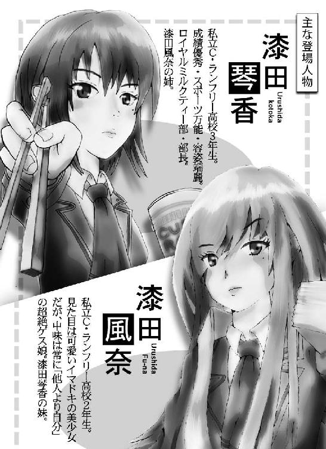
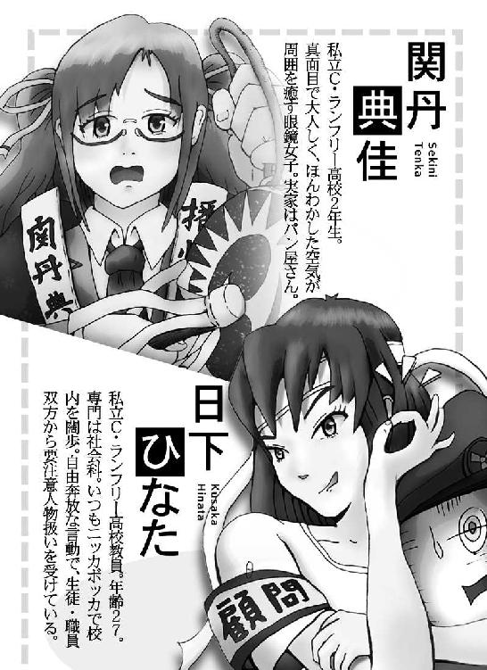
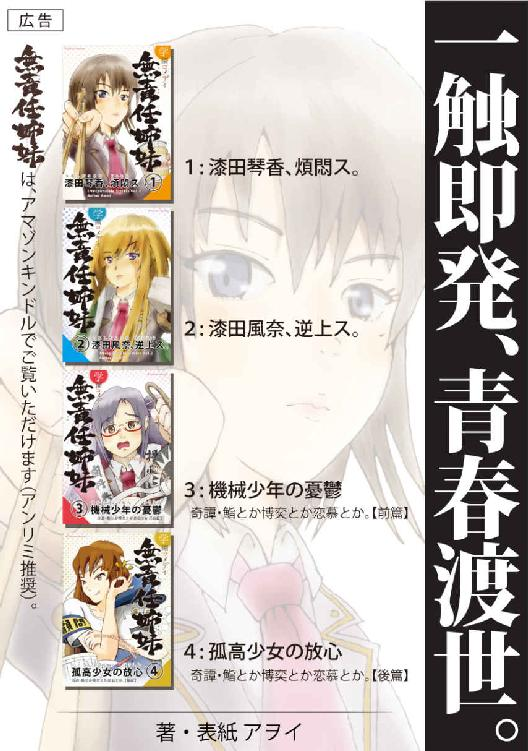
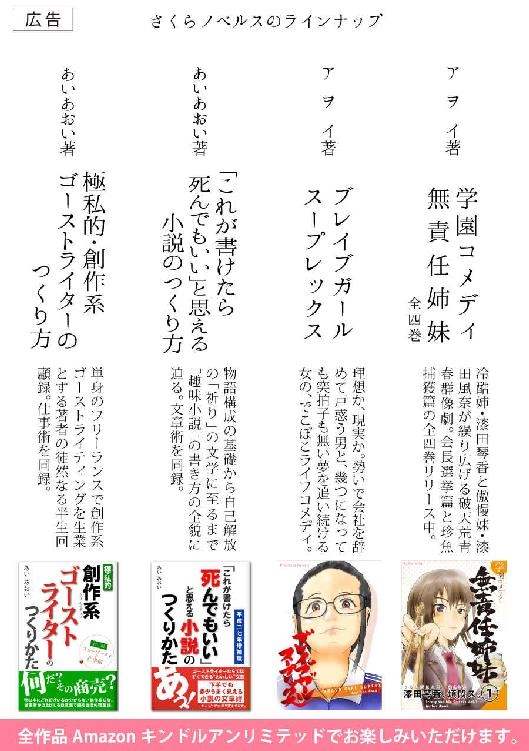

| 学園コメディ無責任姉妹 2: 漆田風奈、逆上ス。 | |
| 小林アヲイ | |
| Sakuranobels (2015) | |
漆田風奈、逆上ス。
著者 アヲイ


漆田風奈、逆上ス。
著者 アヲイ
これから語られることは、私立Ｃ・ランフリー高等学校内に巻き起こったほんの些細な諍いの一幕である。
些細とはいえ、その一部始終は、意地と屈折、栄光と没落、威信と失墜――生徒たちの魂を賭けた戦いの系譜であることに違い無い。だがここにそれをそのまま著すことは、戦いに傷つき疲れ果て、失意のうちに陣頭に消えた多くの生徒たちの無辜の魂を軽んじるようで、虚しい。
それゆえに、この物語を綴る筆先は、彼らの戦いの軌跡をつい一層深く描きがちにならざるを得なかった。よって以降の描写には、一部大袈裟な表現があると思われる。そのことについては前もってお詫びを申し上げる次第である。
だからといって書き改めることはすまい。
読者諸君にはそのことを能くよく念頭に置いた上で、これから先を読み進めていただきたい。
＊
「部長、あれをご覧ください」
廊下を進む二〇人ほどの生徒の一群。その中央にいた漆田琴香の下に、斥候役の男子生徒が駆け寄った。
琴香の視線が男子の指さす先に注がれる。
別館三階奥。薄暗い袋小路の廊下の先。
そこに広がる異様な光景に、琴香は息を呑んだ。
廊下の中ほどにうず高く積まれた学校机と椅子。まるで城壁の石垣の様に複雑に組み合わされ、廊下を左右いっぱいに埋めつくしている。高さも天井すれすれまで達している。組み上げられた構造の深部に目を遣るに、奥行きもかなりあるようだ。
奇怪なバリケードを目にし、琴香は苛立った。
「一体これは何だ？」
「はっ」男子生徒が答える。「机椅子で築かれた砦のようです。先刻まではまったく無かったのですが、ほんの数分前に、これだけのものが......」
「それで、目標の新部室へは辿り着けるのか？」
「このバリケードに阻まれ、進めません」
「先遣隊の二人は？」
「消息がありません」
琴香は注進に及ぶ男子生徒の傍らを抜け、前へ出た。
一群の先頭にあらわれた琴香。
前面に広がるバリケード。その真ん中あたり、飛び出た机の脚の先に一枚のＡ４用紙が貼りつけられている。無造作に歪んで垂れる紙。目を凝らすと「差押通告書」の印字が読み取れた。
――何奴。
琴香の両腿の横で、小さな拳が固く握られた。
「ねえ、あれって琴香お姉ちゃんじゃない？」
典佳の息を殺した声は、わずかに震えているようだった。
風奈は典佳にくっつく様に顔を寄せ、積み上げられた机椅子の隙間から向こうを見た。
腕組みをし、廊下のど真ん中に屹立する琴香の姿。
その後ろに、数十名の生徒の影が見える。
再び姉の顔に目を凝らす。いつも通りの無表情っぷりだが、わずかに眉が吊り上っているようにも見える。その目は一心に正面に注がれている。単身バリケードに対峙するその豪胆さは、歴史上の英雄もかくやの勇ましさだった。
――うわ。マジかよ。
「典佳はここにいて」
風奈は物音を立てぬように腰を浮かし、そのまま静かに後退りしてバリケード内部から抜け出し、封鎖先側の廊下に出た。そしてそのまま、洗練アイロン部の部室へ入っていった。
部屋の広さや構造は、一般の教室よりひと回り広い。中はガランとしている。中央に長机が二本。その周辺に椅子がいくつか無造作に並んいる。
風奈が入った時、立河を囲むように、部員たちが集まっていた。
「みんな」
風奈の声に全員が振り返った。
「漆田さん」立河は椅子から立ち上がった。「どうしました？ 仙田君が帰ってきましたか？」
「いや、違う」
風奈の落ち着かない目の動きに、立河はじめ部員たちは不穏なものを感じた。
「じゃ、何があったんです？」
「敵襲だ」「えっ？」
部員たちはざわめいた。
「ほら、言わんこっちゃない！」
「部屋を取り返すだけならまだしも！」
「バリケードなんか組むからこんなことに！」
「あれじゃ敵意丸出しだよな！」
「一体『敵』って誰なんだよ」
バンッ！
「アンタたち、よく聞きなさい！」
ビクリとする部員たち。
風奈に視線が集まる。
彼女は長机に手の平をつき、鬼の形相であたりを睨みまわした。
「前線からの報告で、バリケードの前に人だかりがあるっていうから、教員か生徒会かと思って見てみたら、ロイヤルミルクティー部だったわ」
「ロ、ロイヤルミルクティー部？」
「そう。大挙して廊下を埋め尽くしてる。そりゃもう敵意丸出しで、どう料理しようかと考えあぐねてる様子だった」
「ほ、本当にそうなのかな」立河の目が泳ぐ。「おそらく、さっきこちらで捕獲した二人が帰ってこないから、探しにきたんじゃないかな」
「だったら一人二人で来ればいいじゃない。それに雰囲気からして、その程度の目的じゃなさそうだ」
「漆田さん、考えすぎじゃないかな？ 雰囲気だけでどうしてそう思うの？ それによく考えたら、相手がロイヤルミルクティー部だって、どうして分かるの？」
「簡単よ」風奈の目元が嫌悪に歪む。
「先頭にいたのが琴香だった」
「えっ？」
ふたたびざわつく部員たち。
「あ、あの漆田琴香が？」
「軍閥と呼ばれるロイミ部が、総帥自ら！」
「ああ、両面茶道部の悲劇が我が部にも......」
「――アタシの予想では」風奈は周囲のざわめきを無視して続けた。「今回の差し押さえの主犯は生徒会ではなく、ロイヤルミルクティー部よ」
「と、いうと？」
「差し押さえなんてのは建前。この部屋をそっくりそのままロイヤルミルクティー部に引き渡す口実よ。ということは、もちろん生徒会もグルね」
「しかし、どうして生徒会がそんなことを」
立河の顔が色を失っていく。
「さあ、そこまでは分からない。きっと生徒会長が弱みでも握られたんじゃない？ ......でも琴香がそんなチンケなタカり行為を図るとは思えないわね。おそらく双方に何か企みがあるのよ」
風奈はあたかも名探偵のように語ったが、実は昨晩の琴香の言葉から想像を述べたに過ぎない。無論その背景までは知る由も無い。
しかし立河はじめ部員たちは、風奈の洞察に舌を巻き、事ここに至っては、もはや風奈に従ってゆくしか道はないという心境に陥った。
風奈の意図せぬマインドコントロールの完成である。
立河は震える声で尋ねた。
「で、これからどうするの？」
「ここは引き下がる道の無い袋小路。徹底抗戦しかないわ」
「た、戦うの？」
「そうよ。バリケードまで組んどいて、敵が来たら闘いもせずみすみす降伏なんて、後々いい笑い者だわ」
「ああ......。だいたいそもそも、バリケードなんか組むんじゃなかった」
「いまさら何言ってるの？ ああでもしないと、差押に反対するこっちの気持ちが伝わらないでしょう？ それに、アンタたちも賛成して作ったんじゃない」
「まあ、確かに」
「生徒会に対してはそれでいいと思ってたのよ。でもまさか、琴香が出てくるとは計算外だったわ」
唾を飲む音も聞こえるほどの沈黙が過る。
「立河、とにかく武器を準備して」
「武器？」
「そうよ。昨日ここに来た時に、アンタ見せてくれたじゃない」
「えっ？ あれを使うの？ 本気で？」
「あたりまえよ！ 早く準備して」
言い終わらぬうちに踵を返し、廊下へ戻る。
風奈のメンタルはすでに司令官だ。
彼女はバリケードに作られた横穴に、身を低くして進入した。奥では典佳が、腰を屈めて隙間から向こうを覗いている。
風奈は典佳の右隣にすっと身を寄せた。
「典佳、何か変わりは？」
「あ、風奈ちゃん。特に無いんだけど、部員さんたちがちょっとザワザワしはじめたかな」
「琴香は？」
「さっきからあそこに立ったままだよ。怖い顔で」
「アイツは普段からあんな顏よ」
「これから私たち、どうなるの？」
「今、立河が武器を準備しているわ」
「武器？」
思わずもらした大きな声に、慌てて口を抑える典佳。
「それって戦うってこと？」
「そうよ。ほら見て、アイツ」
風奈が小さく指をさす。
隙間の向こうには、腕を組み仁王立ちする琴香の姿。
「あんな風にデカい態度を取ってられるのも、今のうちよ」
「こ、琴香お姉ちゃんと戦って、ロクな目に遭ったことがないよ」
「それは毎回負けてるからよ。今度は勝つ。絶対勝つ。いい？ 典佳。勝負ってのはね、何回負けてもいいの。ただ、最後の一回だけ勝てばいいのよ」
「うん......でも」
「なによ」
「武器って、一体何で戦うの？」
「フッフッフ。いいのが揃ってるよ。アタシ、昨日ここで見てゾクッときたわ。楽しみにしといで」
「あ、風奈ちゃん。なんか動きがあるみたいだよ」
「えっ？」
風奈と典佳は、隙間の向こうに目を凝らした。
積み上げられた学習机と椅子。
鉄製のパイプが複雑に絡み合い、ところどころに木目調の天板を組み敷くその異形の壁面は、何物をも寄せ付けない魔性を帯びてそそり立っている。
教育の現場で通常に見受けられるオブジェ。それら一つ一つは凡庸で、別段新たな関心を呼ぶものでもない。しかし、今それは、集合・合体し、凡庸の背後に隠された狂気を露わにしている。
――凡庸は、確かに嫌いだ。しかし、稀なるものなら何でも認めるかと言えば、そうじゃない。
琴香の憤りは、バリケードの制作者のみならず、バリケードそのものにも向けられていた。
彼女の立っている位置は、バリケードから一〇メートルほどのところ。
その目に映る凡庸な狂気は、廊下を幅いっぱいに塞ぎ、天井ぎりぎりまで迫っている。
気を緩めると、押し潰されそうな威圧感だ。
――おそらく、洗練アイロン部の残党がこの蛮行に及んだに違いない。それにしても垂野は事態がこうなることを予測できなかったのか？
琴香はいますぐにでもバリケードを破壊したかった。
しかし、事は簡単ではない。差押通告は生徒会の名で出ている。生徒会の指令に反抗して築かれたバリケードに、表面的に無関係なロイヤルミルクティー部が関与するわけにはいかない。
――ったく。面倒だな......。
琴香は奥歯を噛みしめ、垂野が現場に到着するのを待ちわびていた。
――大体、アイツは「後からすぐに来る」と言っておきながら、いつ来るのだ？
先刻のこと、琴香は再び生徒会室に赴いた。仙田空也がやってきて席を外した十数分後のことである。その時、仙田はすでにいなかった。
『今から新しい部室に引っ越すが、いいか』
琴香の問いに垂野は承知し、すぐに自分も後を追うと言った。加えて
『なるべく早い方がいい。さっき窓から中庭を見たら、仙田は二年の男子と話し込んでいた。部長不在の方が、いろいろと楽だろう』
なるほどその通りだと思った琴香は早速部員を集め、新部室へ向かった。
そうしたら、このザマだ。
――部屋だけ確保して、もともと入っていた部をどうするか考えていなかったんだな。ったく、中途半端な奴だ。
「垂野はまだか」
琴香は側近に尋ねた。苛立った様子に側近は恐縮して答えた。
「はっ。すでに使者を二人ほど遣わしましたが、いずれも戻りません。それに、先遣の二人も」
「おそらくその二人は、バリケードの向こうだろう」
「えっ？」
「見ろ。このバリケード。このぐらいのことを僅かな時間でやってのける手合いだ。ただものでないことは明らか。きっと捕虜として確保し、後々の交渉の道具に使ってくるに違いない」
「なるほど」
「拡声器をここへ」
「はっ」
どこからともなく、白いメガホンに黄色の柄のついたハンドマイクがあらわれる。
琴香はそれを受け取ると、小さな口の前にマイクを重ねた。出力がバリケードに向けられる。
一つ息を吸い、人差し指でトリガーを引いた。
キィィイイインッ！
「ふ、風奈ちゃん。メガホン出てきたよ。お姉ちゃんが何か言うよ！」
「ってててて......。ああ、頭イタ。超音波攻撃かと思った」
「ほらっ、ほらっ......」
スロットルを回し、ボリュームを低くした琴香は、もう一度拡声器を口に当て、トリガーを引いた。
【えー、あー】
掠れた声が廊下に響く。
【廊下にバリケードを築いて立て籠る諸君に告ぐ。
本校は、私学とはいえ、生徒にとって公共の場である。にもかかわらず、廊下を封鎖するとは、何事か。それに、勉強のための備品である机や椅子を、本来の使い方ではなく、このように乱暴かつぞんざいに扱うとは何事か】
「何言ってるの、アイツ。いつも妹を乱暴かつぞんざいに扱ってるじゃない」
「風奈ちゃん、妹は公共物じゃないよ」
「典佳、アンタ誰の味方？」
「いや、その......」
垂野はまだ到着しない。
――あんな馬鹿を待っておっても仕方がない。
琴香は再び拡声器をオンにした。
【我々――、コホン、我々生徒会は、今朝方、別館三階奥、つまりこのバリケード先の教室に、差押通告を発令した。しかし、このバリケードを作った輩は、当該教室の差押執行を妨げんとして、このような蛮行に及んだものか。それともその他に意図があるのか。
まず貴様らに問う。貴様らは、一体何者だ？】
「琴香のヤツ、何で生徒会を名乗ってるわけ？」
「風奈ちゃん、何者かって訊いてるよ。答えないの？」
「何者ったって......何者なのよ？ それに、この件の責任者は誰なのよ？」
「風奈ちゃんじゃないの？」
「た、立河だろ？」
【もう一度聞く。貴様らは、何者だ】
「風奈ちゃ」
「分かってる！ ちょっと、立河は何してるの？」
【なぜ答えない。さては怖じ気づいて答えられないのか。もう一度聞く。貴様ら、何者だ】
「クッソ！ 誰がアンタなんかに怖じ気づくっての！」
「シ、シーッ！ 風奈ちゃん、聞こえちゃうよ」
ふと背後に人の気配がする。
振り返ると、すぐそばに立河の顔があった。
「漆田さん、準備ができたよ」
「バカ！ 遅い。何やってんのよ！ さっさと配置して。そのために銃眼作ったんじゃない？」
「銃？ 風奈ちゃん、銃？」
【最後だ。答えなければ、こちらも手段を講じる】
「立河クン、なんでここに銃があるの？」
バリケードの隙間に筒先を射し入れ、身を屈めて銃を構え、照準に目を凝らす立河は、そのままの姿勢で典佳に答えた。
「私立Ｃ・ランフリー高等学校にはその昔、家政部という部があった。そこは生徒が生活の手段を学ぶためのサークルだったんだけど、派閥抗争が激化し、ついにバラバラになってしまった。
その分派の一つ『食糧調達部』は、当初スーパーの価格調査や野菜の露地栽培をメインにしていたんだけど、そのうち雀や鳩、野良の動物などを捕獲し、その肉で食卓を賄うまでになった。その時に使っていたのがこの銃さ」
「野良の動物って......」
「そう。そんなだから、その部はまもなく鳥獣保護法に引っかかり廃部になった。ところで僕ら洗練アイロン部は、食糧調達部同様、家政部から派生した部でね。だからまったく無関係ではなく、その遺産であるこれらの銃を譲り受け、保管していたのさ」
「そ、そうなの......？」
「あ、それと、もちろんモデルガンだからね。コレ」
――バリケードの向こうが若干ざわついてきた。もう一ゆすりだな。
【答えろ。貴様らは、何者だ】
「馬鹿！ アンタたち声がデカいよ。立河も何を悠長に解説なんかおっぱじめるのよ！」
「でも、ここで説明しておかないと、銃があるなんておかしいと思うのは、関丹さんだけじゃないと思うよ」
「七面倒臭い奴ね！ 読者のことを言ってんの？ ついてこれない読者なんかおいていっちゃえばいいのよ！」
「漆田さん！ 撤回して！」
「風奈ちゃん、そんなに立河クンを怒らないで」
「シーッ！ 静かに！」
――何かが動く気配がするが、答えが無い......何をしているんだ？
【よーし。それでは、言った通り、手段を講じることにする】
――と言っても、何も考えてないけど。
「立河、全員配置についた？」
「いや......もう、あと二分」
「何やってんのよ！ 琴香が何かおっぱじめるわよ！ 何でこんなに時間かかるわけ？」
「何年も使っていないモデルガンだから、錆びついたりして装填がうまくいかなくって」
「大丈夫なの？ ジャムったりしない？」
「それは分からないよ。撃ってみなきゃ」
「じゃ、一か八かだ。とにかく配置につけて！」
【よいか、では、覚悟せよ】
典佳の目の前で、いよいよ風奈は目を白黒させている。
「ダメだ、時間稼がなきゃ！」
突然、風奈は自分の鼻をつまみ、大きく息を吸うと、
《まーてぇーい！ わーれ、こーそはー！》
突如響き渡る妙チキリンなハスキーボイス。
節回しは歌舞伎の大見得のようだ。
「なっ、なんだ？」琴香の目が点になる。
典佳と立河の目も点になる。
――うわ。風奈ちゃん。
――ひゃあ......。あっ。あの目は「時間稼いでやるから早くしろ」って目だ。
立河は左右に散らばるガンマンたちに目くばせをする。
風奈は立河に合図をしてのち、戸惑っていた。
――我こそは、我こそは......、言った手前、何か名乗らなきゃ......。
傍らに目を遣る。
そこに見えたのは、怖気づいた関丹典佳の横顔。
――あ。いっちゃえ。
《わーれ、こーそはー、せきーに、てんーかの、せきーぐーん、だー！》
ロイヤルミルクティー部側に動揺が走る。
「な、なんだって？」
「責任転嫁のセキ軍だと？」
「セキ軍って、何か聞いたことがあるよな？」
「うーん。立て籠ってる感じも、そうかもな」
「それではやはり、キョク左・キョーサン主義なのか」
「うそぉ。まだいたのか？」
「部長、一体奴らは何者なんです？」
琴香は拡声器を右手に下げたまま
「......さっぱり分からん」
【セキ軍、とやらよ。貴様らの望みはなんだ？ 責任転嫁とは、どういうことだ？】
「ちょっと、風奈ちゃん、なんで私が首謀者みたいになってるの？」
「え、えと、傍にいたから、つい名前を言っちゃって」
「あんまりだよ、あんまりだよぉ！」
「ご、ごめん」
《いまーのはー、とりー、けーしだー！》
「取消だと？」
琴香は意味が分からずしばらく考えていた。すると
「部長、垂野会長がお見えになりました」
「すまん、おそくなった」
頭をポリポリ掻きつつ、垂野正太があらわれた。
「大馬鹿者！ 貴様、一体これはどういうことだ」
「これ？ ......うわぁ！ なんだこのバリケードは！」
「私も知らん！ 貴様、洗ア部から部室を取り上げるにあたり、部屋の確保ばかり気にして、部員の方をうまく処理していなかったのではないか？」
「そ、そこまではさすがに。権力を駆使して部室を抑えても、まさか部の取り潰しまではできん。しかし洗ア部はついさっきまで仙田が中庭にいたから、まとまった動きなど取れないはずなのだが......」
「奴らは自分たちのことを『責任転嫁のセキ軍』と名乗っているぞ。もっとも、今しがた取り消したが。貴様の知り合いか？」
「いや、知らん知らん」
「じゃあ、この体たらくはなんだ。今後どうするんだ」
「どうと言われても」
「このままだと、我が部は新しい部屋に入室できない。ということは、貴様への選挙協力も解消になる。それだけではない。私をはじめ、我が部がこれほどまでに馬鹿にされたことはない。生徒会に対し、相応の礼はさせてもらうぞ」
「ま、待て！ ちょっとは俺の話も聞いてくれ」
垂野の訴えかける目に嘘は無いようだった。
「言ってみろ」
「部室については約束だから、使用許可は絶対的に認める。それは俺が生徒会長として保証するし、現にすでに日下先生の承認印も得ている。だからそこはひとつ納得してくれ。で、問題は今のこの状態だが、立てこもっている連中の素性は今のところ不明で、必ずしも洗練アイロン部かどうかは分からないだろ」
「まあな」
「だとしたら、まったく未知の新勢力の登場、ということになる」
「うむ」
「ではなぜその未知の勢力が、このタイミングでここを占拠したか。考えられる線はただ一つ。
この部屋のロイヤルミルクティー部への認可の情報が漏れ、先んじて乗っ取りにかかった――というシナリオだ」
「......貴様ら生徒会は、そんなに簡単に情報を漏らすほど危機管理がずさんなのか？」
「待て。言っておくが、今回の部室認可の件は通常の生徒会に諮っても絶対に通らない――当然だ。ロイミ部は正式な部ではないからな。そこで俺は一人で密かに動いた。結論として俺が情報を伝えたのは、漆田と日下先生だけ。漏らすとしたら日下だろう。もっとも漆田が誰にも言っていなければの話だが」
「わ、私が誰かに言うものか！」
「分かってるよ。それはさておき、重要なのは相手勢力の意図だ。情報漏洩からこの結果につながったと仮定すると、連中はロイミ部に敵意があるのではないか？」
「......何だと」
「ロイミ部は勢力が大きい。それなりに他部からのヤッカミもあるだろう。そんな奴らが、ロイミ部の部室拡大を聞きつけ、そうはさせるかと行動に出たと考えるのが、俺は一番筋が通っていると思う」
「し、しかし」
琴香の表情が不機嫌に歪む。
「貴様のストーリーは、一見無くも無いが、そんな敵がいることに身に覚えはない。あったとしても、こういう形はとらん連中だ。――それに、さっきから貴様は、ロイミ部の責任であるような方向に話を逸らすよう仕向けている。そもそも洗練アイロン部の関与が完全に否定されたわけではない」
「なあ、漆田」
垂野は幾分嘲るような笑みを浮かべ、
「その通り、ご明察だよ。だが、見てみろ。こうして現にバリケードがある。その向こうに、誰だか知らんが敵がいる。奴らのやっていることは、目的が何であれ、体制に対する挑戦だ。そしてこの場合、体制とは生徒会であり、その代表である生徒会長が部屋使用許可を出したロイミ部だ」
「な、何が言いたいッ？」
「生徒会とロイミ部で連合して奴らと戦うってのは、どうだ？」
琴香は腕組みして垂野の目を見据える。
――いずれにしても戦いは避けられないだろう。生徒会と組めば、リスクも分散できて、都合がよいといえばよい。こんな奴と共闘すると思うと虫唾が走るが、今回だけは......。
「漆田。どうだ？」
「......そうだな、よかろ」
ピシィィイイッ！
「イダッ！」
二人のすぐ側を鋭い風切音が走った。
同時にドサリと人の倒れる音。
振り向くと、男子生徒がうずくまり、苦悶の表情で上腕を抑えている。
「何事だ」
琴香が駆け寄る。男子生徒の袖をめくると、腕の側部に赤い小さな痣が出来ていた。
「こいつが飛んできたんだ」
垂野の声に、琴香が振り返る。垂野は指先にごく小さな何かをつまみ、じっとそれを見つめている。
黄色のＢＢ弾。
「彼の撃たれた部位からみて、こいつは間違いなくバリケードの方から飛んできている」
「これが......」
垂野の指先に乗る、直径５ミリ程度の小さな球。
「漆田よ」
「ああ。分かっている」
琴香は視線を男子生徒からバリケードへ移した。
自分でも気付かぬうちに、奥歯を強く噛みしめていた。
一方、バリケードの内部では、風奈が真っ赤になって立河の頭をポカポカ殴りつけていた。
「馬鹿！ 何やってんのよ！」
「ごめん。暴発したんだ。ワザとじゃない」
「アンタ、やったことの意味分かってるの？ 宣戦布告も同様よ。ほら、アイツらを見なさいよ。琴香とあの大きな男、じっとこっちを見てるわ」
「あれは......生徒会長の垂野さんだ」
「え？ 生徒会長？」
――なんで琴香が......生徒会長と一緒にいるわけ？
「......立河、典佳。いい？」
二人は風奈を見た。
「アンタたち、もう引き返せないよ。覚悟はできてる？」
「......うん」立河はうなずいた。
「典佳は？」
「ええっ？ し、知らないよぉ」
典佳の顔がベソを超えてさらに歪む。
「私、何も分からないし、何も関係ないし。大体、今日は何も内容を伝えられずに風奈ちゃんにここに連れてこられただけだよ。一体どうしてこんな風になっちゃうの？」
「いまさら何を言ってるの。典佳みたいな人生は、翻弄されるだけ翻弄されるしかないのよ」
「そんなぁ」
「とにかく、泣き言は無し。諦めてアンタも銃を持ちな」
「はぁ......」
「あの、関丹さん」
ためらいがちな立河の声は、典佳を慰めるように優しかった。
「戦いが終わったら、談話室でお江戸の話をしましょう」
「......うん」
典佳はうっすらと涙を浮かべ、立河の顔を仰ぎ見た。男の表情は、まるで悟りきったかのように穏やかだった。
「あほクサっ！ ウットリしてんじゃないわよ。呑気な連中ね。ほら、敵に動きがあるみたいよ。さっさと位置につきなさい」
バリケード前に運ばれてきたのは、巨大な球体だった。
直径が二メートルはあろうかという真っ赤な玉。材質は、表面には赤い紙が貼りつけられているが、中身は分からない。
「何だ？ これは」
琴香は生徒会の役員連中が転がしてきたそれを見上げ、目を見張った。
傍らに、したり顔の垂野が、腕を組んで立っている。
「オッホン。こいつは運動会の大玉転がしで使われる、いわゆる大玉だ。体育倉庫に収まらないこいつを、同棟同階反対の奥の部屋に片付けていたのだ。近かったからすぐに準備できた」
「大玉転がし？ ウチの学校の運動会に、そんな種目があったか？ そもそも私はその競技をアニメや漫画でしか見たことが無い。しかも決まって小学校ばかりだ」
「フッフッフ。昔はあちこちの学校であったらしい。もっとも、俺自身、体験したことは無いがな。聞くところによると、ずっと昔の生徒会長が、ぜひやりたいと主張して実現に漕ぎつけたとか。何でも、丸く収める心を育成するために不可欠な競技だ、といってな」
「駄洒落か、馬鹿馬鹿しい。で、これを何に使うのだ」
「決まってる。バリケードにぶつけて、丸く収めようっていうのさ」
「なるほど......昔テレビで見たことがあるぞ。古いニュース映像で、大学の講堂にぶつけたり、山奥の旅館らしき建物にぶつけたりして、立て籠もり犯を叩き潰していた」
「そうだ。それと同じことをやろうっての」
「貴様、なかなかやるではないか」
「ちょ、なんなの、アレ！」
風奈の声がやや裏返る。
立河は、風奈の指さす隙間から、向こうの様子を覗いた。
「あっ。見たことある。あれはたしか、この階の反対側の奥の教室に置かれている巨大球だ」
「な、何のためのものなの？」
「さぁ。分からない。この学校、運動会で大玉転がしをするわけでもないし」
入れ替わりで典佳が隙間を覗く。
「もしかして、あれを転がしてバリケードにぶっつけ、ここを突破しようというんじゃないかな。そんな映像を観たことあるよ」
「そうか！ アンタ、いいとこに気付いたわね。こうしちゃいられないわ」
風奈は左右を見渡した。銃眼に銃を構えた男子生徒たちが、微動だにせず号令を待っている。
「いくの？」立河が問う。
典佳が固唾を呑む。
風奈はひとつうなづくと、意を決し、号令を発した。
「掃射！」
ピュシシスィシシピュシィシシシッ......
夥しい風切音と、廊下を奔る跳弾の音。細く鋭い風が空気を切り裂き、バリケード前に佇んでいた生徒たちに襲いかかった。
「イタタタタッ！」
「クッ！」
「アイテテテテッ！」
琴香と垂野は慌てて巨大球の影に隠れる。
二人とも顔こそ免れたものの、身体中に被弾した。他の生徒たちも二人のリーダーに倣い、巨大球の背後に廻って身を隠す。
最後には球を先頭に長い一列の行列ができあがった。
掃射がパタリと止んだ。
廊下はしばらく、水を打ったように静まり返った。
琴香はようやく一つ息をついた。まさしく呼吸を忘れるほどの緊張。
――さっきバリケードの向こうから聞こえた掃射の号令。間違いなく女だったけど、どっかで聞いた声のような......。
静寂を破り、最初に口を開いたのは垂野だった。
「......ったく、アイツら、殺す気か？」
「敵にはどうやらかなりの数のモデルガンがあるようだな。どうしてそんなものが」
「以前聞いた噂だが、洗練アイロン部の部室には、悪名高き食糧調達部の遺産が残されているという。その遺産というのが、おそらくあの銃なのだろう」
「......いったいウチの学校は、どこもかしこも、何で変なサークルばかりなのだ」
「さあな。とにかく火蓋は切られた。もはや戦う以外の道はない」
「どのみち、この巨大球で叩き潰すつもりだっただろう？ 今ちょうど一列になっているから、このまま真っ直ぐ突っ込むか？」
「いや、それは得策ではない。あのバリケードは中央が厚く作ってある。このまま真っ直ぐ行っても効率的ではない。しかも球の表面は紙だ。あの掃射を集中的に喰らったら、穴が開く可能性もある。バリケードに長時間接していても、ひっかいて破られたり、リスクは大きい」
「案外耐久性のない球体なのだな。ではこの位置から斜めに転がして壁際を突くか？」
「それがセオリーだと思うが、今のままでは駄目だ。一列で押すよりせめて三列くらいの隊を組んで押し込まねば、勢いがつかないだろう」
「でも三列なんて幅はとれない。左右の列がまた掃射をくらう」
「そこでだ。球による攻撃はしばらく作戦を停止して、まずは楯になる物を準備しよう。球の左右に可動式の楯を数枚ずつ配置し、球をフォローしながら前進するんだ」
「よし。じゃあ楯は生徒会に任せる。ロイヤルミルクティー部もバリケード破壊のための器具を準備しよう。おい、誰か！」
バリケードの内部では狙撃手たちがそれぞれＢＢ弾の装填を行っていた。
「漆田さん。ちょっと質問だけど」
「何？」風奈は立河の方を向いた。
「僕らがここで永遠に、迫りくる敵を食い止めることができたとしても、いつまでそれを続けたらいいのかな？」
「へ？」
「たとえば、一つの掃射作戦で一歩ずつ前に出ていって、廊下全体、フロア全体という風に領地を増やしていくのであれば、戦う意味も戦う甲斐もあるってものだけど、そういうのはないでしょう？」
「......そうね。むしろ自分たちのつくったバリケードに阻まれ、前進も後退もできない」
「でしょう？」
「うん。そういうのは、全然考えてなかった」
「ええっ？」
「だって、アタシとしては、仙田が帰ってくるまで守り抜ければそれでいいと思ってたんだもん。そしたら琴香は出てくるわ、アンタは銃を暴発させて戦闘状態に陥るわで、ストーリーが暴走しはじめたってわけ。状況を招いた責任は少なからずアタシにもあるけど、事態の責任は、ほとんどアンタにあるわ」
「そ、そんなあ」
「でも、アタシに考えがある」
「え、どんな？」
「それはもっと作戦を練り上げてから言うよ。中途半端な状態で内容を流布させてロクなことはないからね」
「わ、わかった」
「それじゃあ、アタシと典佳は洗ア部の部室で作戦をまとめるから、アンタはバリケードに入って前線の指揮をして。きっと今、敵はさっきの一斉掃射にビビって作戦練ってるでしょうから、しばらく攻撃してこないはず。でも、きっと必ず何か仕掛けてくるから警戒は必要よ」
「り、了解......」
「......何？ 了解したんならさっさと行きなさいよ。何ジロジロ見てんの？」
「いや、その」立河は戸惑いながら尋ねた。「漆田さんはなぜそんな風に、バリバリ指示ができるの？ 凄いなぁって思って。まるで昔どこかの外人部隊にでもいたかのようだよ」
「そんなまさか。こんなのは全部......」
風奈は思いつめたような目をしたが、すぐにキリリと引き締めて
「ま、いいじゃん、どうでも！」
こうしてバリケードを挟んで、「セキ軍」こと【立河・風奈ら占領軍】バーサス「正規軍」こと【生徒会・ロイヤルミルクティー部連合軍】の戦いが始まった。
正規軍のうち、生徒会役員の一部は、現場を離れあちこちからベニヤ合板などをかき集め、ＢＢ弾を防ぐための楯づくりに勤しんだ。楯の準備は廊下の踊り場で秘密裏に行われた。その間、前線にまったく動きがないままでは、裏で何かしているのを敵に悟られる可能性があるので、時折バリケードに向かいバレーボールを投げつけるなど、カモフラージュを行った。もっとも、ちょっと見え透いてはいたが。
ロイヤルミルクティー部は旧第二音楽室から何本かの細い支柱用のポールを運び込んだ。部員たちはその先にフックをつけた。巨大球での突撃の際、横から搦め手の様に使ってバリケードの解体の手助けをするためである。
また、ロイミ部にもセキ軍同様、モデルガンがあった。それはかつてロイミ部が茶道部と独立抗争を繰り広げた際に強奪した、その名も「エア種子島」。元々は、茶室の変わった調度としてオリジナルに誂えられたものだった。実際の火縄銃の様に装填から発射まで時間が掛かるところなど、いかにも本物志向で、歴史マニアにはたまらない一品だ。だが、そのこだわりが、今回のような実践の場では実用性を遠ざけてしまった。しかも二丁しかなく、長篠の合戦よろしく交代制で構えようにも史実に一丁足らず、まったく戦力にはならなかった。
だが、セキ軍に対し「敵方にも自軍同様の備えがある」と知らしめる効果はあったかもしれない。
一方、当のセキ軍は、相変わらずリーダー不在の態で、一応立河が顔役のような立場でいるものの、実質は風奈のようでもあり、だがいざとなると「アタシ知らない」と投げ出すようでもあり、早速組織として危うい様子だった。セキ軍命名の由来となった典佳は、オロオロするばかりでまったく役に立たず、立河の後姿を見ては涙を浮かべてばかりいる。そんな様子は誰の目にも「ああ、この子は」と簡単に悟られもするのだが、みな自分のことが一番大事で、意に介することはなかった。もっとも下手に「関丹さんってばさ」などと声を掛けようものなら、風奈からどんなカミナリが飛んでくるか分かったものではない。
風奈と典佳は洗ア部の部室に入り、二本の長机を挟んで作戦会議を――全くしていなかった。いや、していないわけではないが、どうしても話題が別の方へ逸れてしまうのだった。
二人は向かい合って座っていた。風奈は顔を顰めてブツクサ言っている。典佳はそれをおどおどして聞いている。
「ったく、何で琴香があっちにいるわけ？」
「なんでだろうね。風奈ちゃん、おうちで何か聞いてはいなかったの？」
「それがさ、思い当たる節があるのよね」
「え、何？」
「夕べさ、いつものように庭でお茶してたわけ。その時、新しい部室が出来るかもって言ってたの」
「へぇ。それってここの部屋のことだったのかな」
「たぶんね。あと、気になるのがね、高校生活の集大成がどうのこうのと」
「シュータイセー？」
「そう。......ああ、もう！ 琴香のこと考えてたら、何だか苛々してくるわ。ホント、アイツ腹が立つ」
「そのシュータイセーが、生徒会の垂野さんと一緒に行動している理由なのかな」
「さあ？ さっぱり分かんない」
「でも、私たちも含めたこの構図ってさ、生徒会長選挙の構図と同じだよね」
「ん？」
「ほら。私たちと立河クンは、仙田さんの応援なんでしょ？ そして生徒会の垂野さんも、次の選挙に出る。もしかしたら琴香お姉ちゃんは、垂野さんの応援に一役買っているのかもしれないね」
「あっ、なるほど。そうかぁ。アンタ鋭いね」
「そ、そう？」
「だけど、琴香が人を応援するってのは、一口に信じがたいな」
その時、表で大きな音がした。
ガッシャーン！ ズッシーン！
「な、何の音？」
風奈は驚いて立ち上がった。立河が目を白黒させて部室に飛び込んできた。
「あの巨大な赤い球体が、バリケードに突入してきたよ！」
「なんだって？」
風奈は封鎖した廊下に飛び出した。
バリケードの方に目を遣る。
ズシン、ズシン。
音と共に、バリケード全体が揺れる。その度に、積み重ねられた机椅子が悲鳴を上げるように軋む。
「これ、どのくらい耐えられる？」
「うーん。まだしばらくは大丈夫だけど......」
「だけど？」
「厄介なのは、巨大球だけじゃないんだ。球の左右にベニヤの楯が並んでいるんだけど、球が突っ込むと同時に楯と楯の間からフックの付いた竿が伸びてきて、重ねた机椅子の柱を引っ張るんだよ。そうすると、簡単にバリケードの表面が崩れてしまう」
「なるほど、敵も考えてるわね」
「さすがは漆田さんのお姉さん、琴香さんがいるだけある」
「敵を褒めてどうすんの？」
「ご、ごめん」
「とにかく、もう少し凌いで。作戦計画の完成は間近よ。それに、机椅子はまだいっぱいあるんだから、どんどん後方に組み足していけばいい」
「でもそれをすると、こっちの廊下部分がどんどん狭くなってゆく。それに、下がりすぎると部室の手前の扉が手薄になる」
「そうね。あそこを取られたら試合終了。じゃ、そこを重点的にカバーして」
「了解！ 漆田さんは早く作戦計画を練り上げてね」
「分かってるわよ」
「よし、いい調子だな！」
最前線のベニヤの楯の背後で腕組みして戦況を見守る琴香は、満足気に言った。
「ああ。このままいけば、案外短い時間で制圧できるかもしれん」
垂野の目もバリケードに向けられている。
球体が突入する。と同時に、左右の楯が前方へ突っ込み、楯の間からフックが飛び出す。フックは無造作に机椅子の足に引っかけられ、球体の後退と同時にグッと楯の内側に引き入れられる。すると机椅子はガラガラと音を立てて崩れ落ちる。それらは前線の生徒たちによって、速やかに回収される。
バリケードの前面は予測不可能に破壊されるため、銃眼を失ったセキ軍は、すぐに迎撃掃射できない。
この攻撃パターンは、敵方の無力化にもつながっていた。
――完璧じゃん。
垂野は一人ほくそ笑んだ。
――それに何よりなのは、今度の戦いによって俺と漆田の間に共闘者としての絆が生まれること。生徒会長選挙の完全な協力体制は間違いあるまい。それに、漆田と組めば、日下先生と対等に伍していけそうな気がする......。
「会長！」
ひとりの生徒会役員が注進に及んだ。
「どうした」
「後方から双眼鏡で確認したのですが、敵方はバリケードの強度を増すべく、内側からさらに机椅子を補強させているようです」
「何だと？」
「そんなの、知れたこと」
傍らにいた琴香は冷静に呟いた。
「先程から掃射の量が減っている。人員を別の作業に割いているのは明らかだ。今の情報で、それが何だったのか明らかになったな」
「漆田、気付いていたのか」
「何となくな。ところで垂野。私に作戦がある」
「何だ」
「まず、この球体を、正面から十一時の方向へ連続的に叩きつける。そちらは廊下外側だから敵方も備えを設えづらく、バリケードはどんどん下がる一方になる。よって連中もそちらへの補強を重点的に行うだろう。
それである段階まで攻撃を行ったら、今度はいきなり二時の方向へ向きを変える。敵方は廊下外側への過剰補強ですぐに態勢を変えられまい。一気に叩いて二メートルも押し込めば、おそらく部室の手前の扉を制圧できるだろう」
「なるほど......いい作戦だ」
「私は前線に残る。垂野は球の背後について、球体操作の指揮を。十一時から二時への方向シフトのタイミングは、私から合図を出す」
「分かった！」
琴香の指示に、垂野が駆け出す。
――うーん。どう考えても、漆田の方が大将で、俺はせいぜい武将の一人だな。
こうして琴香の『ヒトヒト・マルフタ』作戦が開始された。
巨大球は垂野の指揮で廊下外側のバリケードへ幾度も突っ込む。それは計った様にほぼ一分間隔で、その定期的かつ緩慢な動作は、着実に敵方の行動パターンに刷り込まれていった。
――いいぞ。これを徐々に遅くしていけば、奴らの動作パターンも遅延し始める。スピードを制して一気に二時を叩く！
琴香は廊下教室側の前線からその様子を見ていた。
ふと、足元でガサリと音がした。
何気なく目を遣る。すると、バリケードの下の隙間から、一人の男子生徒が上半身だけを廊下に出し、そこから這い出ようとしているのだった。
「き、きみは」
「部長......」男は力を振り絞り頭を上げた。
琴香は相手の顔を見てハッとした。それは帰ってこない先遣隊の一人であった。
周りは、十一時方向の球体攻撃に目を奪われており、誰一人こちらに気付いていない。
琴香はそっと楯の前に出た。
一発のＢＢ弾も飛んでこない。敵も球体に気を取られている様子だ。
「バリケードが崩れたら潰されるぞ。待っていろ。今助けてやる」
琴香は悟られぬよう声を殺してそう言うと、自ら両手を差し伸べ、男子生徒の肩を掴み、力を込めて引っ張った。
「ぐぬぬぬぬ......」
歯を食いしばる琴香。苦悶を浮かべる男子生徒。
男の身体がずるずると引きずり出されていく。
足のつま先が出た、その時。
ピシィイイッ！
耳元を、切り裂く様に風が走った。
「いかん、気付かれた」
琴香は男子生徒の上体を抱え上げ、楯の中に引きずってゆく。たちまち掃射の嵐が襲う。琴香の背中に刺すような感覚が無数に飛び散った。
「イタタタタタッ！」
琴香は何とか楯の裏に逃げ込んだ。
男子生徒の身体を抛り出すようにすると、自らも床に手と膝をつき、息を上げた。
「あ、ありがとうございます」
男子生徒はうずくまり小さな声で礼を述べた。
「イタタ......背中はいいが、ウナジは痛い。きみは大丈夫か？」
「ええ、なんとか」
「もう一人は」
「まだ、向こうに残っています。二人とも脱走したらバレるので、こっそり一人だけ抜けて救援を頼もうと」
「そうか......すまなかったな」
「め、滅相もありません」
琴香はうなじを抑えてゆっくり立ち上がった。そしてスカートの裾を払うと、髪を軽く手櫛で整えた。
そうして再び男に尋ねた。
「きみは向こうにいたのだから、あっちの様子がよく分かっているな」
「はい」
「実は今、我々ロイヤルミルクティー部は生徒会と協力して戦っている」
「はい。存じております」
「しかし、こちらでは敵が何者なのか、いまだによく分かっていないのだ。中にいるのは、仙田なのか？」
「え？ ご存知ないのですか？」
「ああ」
「そうでしたか......。仙田ではありません。そもそもあそこには仙田はおりません」
「では一体奴らは」
「中にいる兵隊役は全員洗練アイロン部の部員です。指揮をとっているのは二人いまして、一人は仙田の幼馴染の立河団十郎」
「ああ、例の高校生モデルとやら、か」
「はい。そうです」
「確か彼は、生徒会長選挙のラ高総連側の応援リーダーでもあったな。で、もう一人は」
「はぁ、そのもう一人でございますが......」
男子生徒は言いにくそうに顔を下に向けた。
「どうした。言ってみろ」
「はい。それが、その......部長の妹君なのです」
琴香の目からサッと色が抜けた。
「なん......だと」
「決して見間違いなどではございません。あと、妹君といつも一緒にいる眼鏡の子もおりました」
「典佳か......。きみ」
「はっ」
「敵方のリーダーが立河であることは口外してもいいが、風奈がいることは黙っておいてほしい」
「畏まりました」
「ああ、もっともきみは少し休んだらいい。ここは危険だ。案内する。私と一緒に後方へ下がろう」
二人が後方へ下がると、ちょうど垂野も下がっていた。三人は階段を降り、二階との間の踊り場へやってきた。琴香はそこで垂野に帰還した男子生徒を引き合わせた。男子は自分の見てきた状況を垂野に説明した。もちろん、風奈と典佳のことは触れずに。
「なるほど。指揮官は立河なのか」
「はい」
「いやあ、敵が誰なのか判っただけでも大きな進展だ」
――フッ。立河め、こんだけのことをやらかしたのだから、学校挙げての大問題になるぞ。そしたら仙田の応援どころではない。懲戒や停学は必定。スキャンダルになればモデルの仕事も無くなるに違いない。終わったな、立河。リア充時代の終焉だ。
「垂野。何をにやけている。しまりがないぞ」
「おっと、すまん。......ところで漆田。二時方向への攻撃タイミングはいつにする」
「うむ。そうだな。そろそろ......」
すると男子生徒
「あの、口を挟むようで恐縮ですが、二時方向というのは先ほど僕が這い出てきたあたりのことでしょうか」
「そうだ」
「あそこをあの巨大球で攻撃するのはあまり賛成できません」
「なぜだ」
「今はバリケードのために見えませんが、実は教室側の壁に一本だけむき出しのパイプがあるんです。バリケードはそのパイプに固定されています。固定にはモップの柄だとか、天井のスクリーンを引き下ろす鉄の棒だとか頑丈なものが使われているので、あの方面に攻撃をしかけても、バリケードは微動だにしないでしょう」
「なんだと！」
垂野と琴香の声が揃った。
「もっともその棒で空洞ができていたので、僕は逃げてくることができたんですが」
「......ということは、私の作戦は、敵に廊下外側を強化させ、バリケードをより頑丈なものに変えてさせてしまったということか。何という失策」
「俺もさすがにそこまでは、気が付かなかった」
垂野は拳を固め、うつむいた。
あたりに沈痛な空気が漂う。
すると
「こ、この騒ぎは何事ですか！」
突然、階下から甲高い声がした。
三人は反射的に振り返る。
そこにいたのは、地味な眼鏡の男子生徒と、仙田空也その人だった。
少し時間を戻そう。
今から一時間ほど前、場所は図書室。
中庭で意気投合した仙田空也と律木公太郎は、今後を打ち合わせるために、図書室へ赴いた。行われていた保護者会はちょうど散会となった直後で、室内は閑散としていた。図書室の担当はパソコンにイヤホンを繋いで音楽を聴いている。
これなら少し声を出して話をしても大丈夫そうだ。
二人は一番奥の自習スペースで語り合った。
「クウさん」
律木の目は最近に珍しくキラキラと輝いていた。
「とにかく部室は一旦諦めましょう。いや、放棄するのではなく、生徒会に一旦返しておくくらいの気持ちでいいんですよ」
「ああ」
「で、部員には一回臨時集会を開いて説明をするんです」
「何を説明するんだ？」
「まずはありのままに、部室は取り返せないことを言う。そしてその背後に少なからず生徒会の野心みたいなものが見え隠れすることを伝えるんです」
「で、今度はみんなで生徒会に殴りこもうとでも？」
「そんなことをしたら、停学になりますよ」
「分かってるよ。冗談だ。......まあ、集団の結束を固めるために仮想敵を作るのは常套手段だ。しかし部内のちょっと過激な連中が暴走して垂野を闇討ちするかもしれん」
「それは最悪のシナリオです。だから、そういう暴走しがちなエネルギーの鉾先を用意しておかなければならない」
「そうか。その怒りエネルギーを......選挙運動に使えばいいんだ！」
「その通りです」
律木のまなじりが嬉しそうに垂れる。
「今度の選挙でクウさんを必ず当選させ、ラ高総連の生徒会運営の名の下に、正式に部室を取り戻そう、あるいはもっと居心地の良い部屋を用意しよう――そんな風にみんなを説得できませんか」
「ああ、それならいけると思う」
仙田の目にも希望の光が溢れた。
「洗ア部の活動を全てラ高総連活動に費やせば、穏やかな部員も過激な部員もみんな一つになるよ。そうすれば、もしかしたら選挙にも勝てるかもしれない」
「それじゃ僕も、外部応援団員として、クウさんのために働かせてください」
「ありがとう。いっそのこと、お前も洗練アイロン部に入ったらどうだ？」
「いや、それは......」律木は少し目を伏せ「そういうのは、苦手なんで」
「お前は昔から、大勢の友だちより、少しの親友ってタイプだもんな」
「せっかくのお誘いですが、すみません」
「じゃあ、とりあえず、今僕の選挙応援を一手に管理してくれてる立河団十郎に会ってみるか？」
「ああ、立河君がやってるんですか」
「そうか、お前も知り合いか」
「忘れたんですか？ 小学校に入る前のわずかな時期、よく三人で遊んだじゃないですか」
「そうだったなぁ。立河はすぐに引っ越しちゃったんだよな」
「そうです。あの頃からモテまくってましたよね」
「そういえば、那鼓もたまに交じってたじゃないか。鬼ごっこや警ドロであいつが鬼になると、メチャクチャ脚が速いから、みんなすぐに捕まっちゃって。『つまんない』って言ってあんまり出てこなくなったんだよな」
「その頃から感じの悪い姉貴でしたね......。ところで立河君は今どこに」
「あ、しまった！」
仙田の顔が強張った。
「先生に掛け合ってくると言って、部室の前に残したままだ。あちゃあ。もう七時前じゃないか。二時間近く放置してしまった」
「外は暗いし、もう帰りましたかね？」
「いや。帰るならきっとメールをくれるはずだ。もしかしたら、ずっと待っているのかもしれん。ちょっと行ってみるか」
そうして二人が別館三階奥を訪れたところ、階段の踊り場で垂野・琴香に出くわしたのだった。
「垂野、ちょっとこっちへこい！」
琴香は垂野の袖を引き、階段の踊り場から二階へ連れ出した。
「な、何をする？」
垂野は抗いつつも、珍しく狼狽を見せる琴香に興味を抱いた。
二階部分にやってきた琴香は、階段の上を振り返った。仙田の姿は見えない。しかしそれでも彼女は垂野の袖をつかんだまま、さらに二階の奥へと引っ張った。
三教室ほど見送った廊下の中ほどで、ようやく琴香は足を止めた。
「漆田。一体どうした？」
琴香はあたりに目を遣り、人のいないことを確認すると、呟くように小さな声で
「これは罠だ」
「はぁ？」垂野は怪訝な顔をした。
琴香は目元を険しくし、
「あの二人は今まで図書室にいたと言っていたが、今日は保護者会があって使えないはずだ。私は昼休みに図書室に行った時、そんなお知らせが貼ってあるのを見た」
「その知らせは生徒会にも来ている。そう......日下がチーズさきいかを持ってきた時に聞いた。そういえばその時、漆田もいたじゃないか。
会議は確か一時間前には終わっているはずだ。だからあの二人の言うことは別におかしくないぞ」
「黙れ。私がおかしいと言ったらおかしい」
「んな無茶な」
「とにかく、私が思うに、あの二人はバリケード向こうにいる立河と共謀しているに違いない。そうだな......きっとメールか何かで」
「うーん。確かにその線は否定はできないな。だとすると彼らの企みは一体なんだ」
「それだ。そこが分からないから私は苛立っているのだ」
「そ、そうなのか？」
「そうだ」
垂野は漆田をしばらく観察した。
落ち着かない様子で目をキョロキョロさせている。
――妙なことがあるもんだ。
琴香は腕組みをし、垂野の周辺を右へ左へ歩きながら言った。
「もしかしたら、あの二人は別働隊を用意して私たちをバリケードと挟み撃ちにしようとしているのかもしれない。そう思ったからここまで降りてきたが、その気配はないようだな。だが、もしかしたら一階に......」
「まさか。各階は渡り廊下で本棟とつながっている。配備するならそっちだろう」
「馬鹿な。見ろ。時計は十九時をとっくに回っている。渡り廊下はすでに施錠されている時間だ。貴様は生徒会長なのにそんなことも知らないのか」
「クッ......」
「どうやら貴様には、あの二人に対する警戒心が足りないようだな」
「まあ、見た感じ、本当に事情を何も知らないようだし」
「分かってるのか？ 仙田は選挙の敵だぞ」
「分かってるよ」
「はぁ」
琴香は右手の親指と中指を左右のこめかみに当て、"独りブレーンクロー"の状態で、ひとつため息した。
「分かっていながら、よくもそんな悠長な態度を取っていられるな」
「別に悠長じゃねえ」
「ならば奴が確かに立河らと共謀していないという根拠はあるのか」
「そんなの、今の時点であるわけないだろ」
「では、それを奴ら自身に証明させることにしてはどうだろう」
「一体どうする？」
「奴を前線に立たせ、立河に降伏するように言わせるのだ」
「......まあ、それくらい、いいんじゃないか」
「それでは貴様が奴にそれを勧告しろ」
「分かったよ。......ったく。完全に上から目線だな」
垂野はそっぽを向いて舌打ちした。
「その間に」琴香は右往左往する足を停めた。「私は別の手段でこの戦争を一気に終結させることにする」
「へ？ 一体、何をするつもりだ？」
「私が思うに、このまま今のやり方を続けていても、あのバリケードを陥落することはできないだろう。こっちのモデルガンはお飾り程度だし、巨大球もすでに相当崩壊している。例のフックも、バリケードがポールに固定されていると判明した以上、今以上の効果をあげることはできない」
「......そうだな」
「そこで私は、ロイミ部の精鋭を使い、別館の外からロープで洗ア部の部室に直接侵入、制圧するプランを立てた」
「何だと？ 三階だぞ！ そんな危険な」
「甘く見るな。ロイミ部はスワット部隊を備えている。私自身、それくらい朝飯前だ」
「うーむ......ロイミ部ならやれそうだから怖いな」
「やれそう、じゃない。やれるんだ。そういう訳だから、私はもう行く。その間に貴様はさっき言った通り、仙田を前線に立たせ、降伏勧告をさせてくれ。敵の注意をそちらに引きつけている間に、私たちが外から入るから」
「なるほど、そういうことか――って、だから、さすがに無理だろ！ 危ないぞ！」
「それじゃあ、頼むぞ！」
琴香はそう言い残し、下階へ駆けていった。
一方、セキ軍側。
バリケードの盤石な守りとモデルガンの活躍で鉄壁の防御を続けていたが、ここにきて最大の敵と向かい合っていた。
空腹である。
無理もない。時刻は十九時を回っている。普段なら夕食の時間。食べ盛りの高校生たちにとって、空腹は耐え難い苦痛だ。にもかかわらず、部室には飴玉一個すら無かった。
部員たちは苦しげにぼやく。
「腹減った～」
「力が出ないから、もう机椅子を運べないよ」
「目が霞んで、照準がうまく測れない」
「お腹が鳴ったら、居場所がバレちまう」
「おい、向こうから何かいい匂いがしないか？」
部員たちは我先に、バリケードの隙間から向こうを見る。
するとベニヤの楯に隠れて生徒会やロイミ部の連中が、カップめんを啜っているのだった。
ズッ、ズズッ、ズズズーッ......。
湯気の向こうに見える連中の表情といったら、美味そうなこと、旨そうなこと。セキ軍側は口の端から唾液の糸を垂らした。
「はぁあ。たまらん」
「これが今までで一番のダメージだ」
「まったく、立て籠もりっつったら、あれは風物詩なのかもしれん」
「何かもう、どうでもよくなるよな」
一人また一人と銃を置く。
部員たちはすっかり戦意喪失し、封鎖された廊下に出て、大の字に寝そべった。
「コラッ！ ちょっとアンタたち！ 敵襲があったらどうすんのよ！」
「無いですよ。ほら、みんなラーメン食ってんですから」
「口答え、するなーッ！」
風奈がホウキを逆さに持って振り廻し、檄を飛ばす。
部員たちは「ふぇえーい」と、気の抜けた返事をし、バリケード内部の銃眼へ戻っていった。
「腹ペコなのはアンタたちばかりじゃないってーの！」
「でも、ホントのホントにお腹減ったね」
傍らから典佳のか細い声がする。
「そうね......。ここまで腹が減ると、アンタの家のパンでも食べられそうな気がするわ」
「もう！ どういう意味よっ！」
典佳の頬がプゥーッと膨れる。
「はは、ホントのパンみたい」
「二人とも、ちょっといいかな」
振り返ると、部室の奥から立河が出てきていた。
「何？ どうしたの？」
「あのう、新しい作戦は完成した？」
「う......うん。ほ、ほぼ、できてるわ」
「そろそろ聞かせてもらえるかな」
「あ、あと最後の一点が、ど、どうもね」
「......そう」
ため息交じりにそう言って、風奈から視線を外した立河の目には、もはや不審の色しか見えなかった。
――そりゃそうだよなぁ。
風奈は立河の背中に面目なく思った。
――だって、思いつかないんだもん。
その時突然、バリケードの向こうから、やや甲高い男の声が聞こえてきた。
《おーい。洗練アイロン部のみんなー》
「この声は？」風奈は尋ねた。
「あ、これ、仙田君です！」
「え？ なんで？」
《僕だー、仙田空也だよー》
「仙田君！」
立河は思わず声を上げ返事をした。
「シッ！」
とっさに風奈が立河の口元を抑える。
《おーっ、立河ー、いるんだなー》
答えない。
《今、僕は垂野会長といるー。誰も僕らを処分したりしないー。今そういう約束をしたー》
「そんなの嘘よ！」
風奈は怒りを込めて呟いた。
「漆田さん、とにかく最後まで聞きましょう」
《それにー、教室を乗っ取るのはー、よくないー。だからー、バリケードを解こうー》
「あんな人の良さそうな奴、裏で操作されているに決まってるわ」
「仙田君はそんな人じゃないよ！」
「でも、あっちには」
《さー、出てきてくれー、おしまいにしよー》
すっかり仙田の声に聴き入る立河。
「クソッ！」
風奈は息を荒げ、バリケードの横穴に駆けこんだ。そして部員から銃を奪うと銃眼に銃口を射し入れ、トリガーを引いた。
ピィイインッ！
「漆田さん、やめて」
立河が銃を抑える。風奈はそれでも次の弾を撃とうと、激しくもがく。
「放せっ！ どういうつもりッ？」
「仙田君を撃つことは無いでしょ！ 彼は丸腰で交渉に出てきているんですよ。それを打つなんて、恥ずかしくないんですか！」
無理に銃を引き剥がされた風奈。
途端に大人しくなる。
やがて
「......悪かった」
「分かってもらえれば、いいです」
「立河のクセに、正しいことを言うじゃない」
「そ、それは、どうも」
「ねえ。アタシの弾、アイツに当たったの？」
「いえ」
「ふーん......。じゃ、どこに」
「跳弾して......関丹さんのおデコに」
「へ？」
風奈はとっさに後ろを振り返った。関丹が額を抑えて泣きベソをかいている。
「典佳！」
風奈は彼女に駆け寄った。
「ふぇえ。ひどいよ、風奈ちゃん」
「ごめん。ワザとじゃないよ。ホントにごめん。でも......」
「でも？」
風奈はプッと吹き出し、
「アンタの泣きベソ、いつ見ても汚いね」
「もぉおーっ！」
典佳は怒って両手を上げた。
額の真ん中に、赤い点が一つ。
遠くで立河が、ほんわかした笑顔を浮かべていたことに、典佳は気付かなかった。
立河は思った。
――こんな状態で微笑ましく思える今って、どんだけ絶望的なんだろ。
「会長、危険です！」垂野の背中に生徒会役員の声が飛ぶ。
だが
「大丈夫だ」
垂野は楯の前へ出て、最前線に立つ仙田の隣に立った。
仙田は身じろぎ一つせず、じっとバリケードを見つめている。
垂野は彼と同じ方を向き、尋ねた。
「何か今、跳弾の音がしたような気がしたが、きみに飛んできたのか？」
「いや」仙田はバリケードを向いたまま答えた。「こっちには、何も飛んで来なかった」
「そうか」
「会長。ここに出てきたら危ないよ」
「何。大丈夫」
仙田はここで初めて垂野の方へ顔を向けた。
そしてしばらく相手を見つめ、
「どうして、僕の隣へ？」
「フッ」
垂野は一つ含み笑いをし、
「戦士が前線に出ることの何がおかしい」
――後ろから見てたら、敵の前に一人立つお前がカッコよさすぎるんだよ。これじゃ生徒会やロイミ部の票までお前に流れかねないから、牽制しに来たんだよ！
「ほう」仙田はやや表情を崩し、
「会長は、やっぱりちょっと、クサいね」
「うるせェ」
「漆田さん、関丹さん」
長机の正面に立河が座っている。
その反対側に、風奈と典佳。
三人とも、表情が硬い。
「何よ？ 改まって」
風奈の感情は空回りしている。
立河は、穏やかな表情を崩さずに言った。
「もうそろそろ、止めにしませんか」
風奈と典佳の表情が固まる。
「そ、そうだよね」
典佳は右手で額の赤い点を気にしながら、二人の顔をかわるがわる見た。
「わ、私たち、け、結構頑張ったんじゃないかな？ それに、今降伏したら、お咎め無しなんでしょう。なにより、私もうお腹ペコペコ」
「そうだよね。僕もペコペコ。仙田君もああ言ってるし、潮時じゃないかな」
「いろいろあったけど、た、楽しかったかなぁって。ね？ 立河クン。ね？」
「う、うん。いい思い出」
二人はチラチラ風奈に目を遣る。
「あの、いつかこういう経験が、社会に出て役立つことも、あるんじゃないかなぁ......なん、てね......」
風奈は黙っていた。両腕は机の上に投げ出されている。拳は紫に色が変わる程固く握りしめられ、ワナワナと打ち震えている。
「アンタたち......」
腹から絞り出されるような風奈の声。
「な、な......」
「ふ、風奈ちゃ......」
ドスンッ！
両の拳が長机の天板に振り下ろされた。
ついに頭を上げた風奈の両目は、怪しい光を放っていた。
「なァにが、社会に出て役立つ、だぁ？ 一体どこの社会に出るつもりよ。南米か？ パレスチナか？ ○ス○ム国か？ んぁあッ？」
「ご、ごめん。迂闊な事、言った」
「立河ァ。この世は勝つか負けるかの、どっちかなのよ。負けるが勝ち？ 何の理屈だソレ？ 負けは負け以外のなんだっつうの」
「で、でも風奈ちゃん」
典佳が涙目で訴える。
「このままじゃキリがないよ。別に降伏したって、私たち高校生だよ。何も失う物なんかないよ」
「相変わらず日が暮れるような馬鹿ね、典佳は！ 一体どこまでお人好しなのよ。戦争中の取引に、司法も正義もありゃしない。さっき仙田の口から名前が出たのは、洗ア部と立河だけよ。アタシと典佳はどこまでいっても賊軍。投降しても軍法裁判にかけられて、死刑は必定」
「そんな、まさか」
「あっちには琴香がいるんだよ。洒落じゃすまないわ」
「ふぇええ......そんなわけないよぉ。琴香お姉ちゃんは優しいよぉ」
「よーし、分かった！」
風奈は立ち上がった。
「これからアタシが秘蔵していたラストミッションを説明するわ。立河、アンタもここまで付き合いなさい。それ以降は降伏だろうと切腹だろうと、何だってするがいいわ」
「ええっ？ 今ごろ？」
「あ？ 文句アンの？」
「え、いや。......聞きます」
「ねえ、風奈ちゃん。もう帰ろうよぉ」
「大丈夫。うまくいけばすぐ帰れるから。まかしとき」
――こりゃ言い出したらきかないよ。
立河と典佳はしぶしぶ風奈の話を聞くことにした。
「作戦は極めて単純よ」
にこやかに説明を始める風奈。何でこんなにこの人はガラッと気分を変えられるんだろう？ 二人は気味悪さすら感じた。
「前に立河がアタシにぼやいたとおり、このままここを守っているだけでは、戦局に変化はないわ。ところがアタシのプランでは、これが一変する」
二人は黙って聞いている。
「まず、アタシと典佳、そして......そうね、洗ア部から三人くらいメンバーを借りようかしら。その五人でチームを作る。んで、二〇メートルくらいのロープを用意する。立河、ここにそんなものある？ 結構太い方がいいんだけど」
「うーん。ホースならあるけど」
「あ、それでいい。五〇センチおきに結び玉を作れば使えると思う。そのホースを部室の窓から地上に垂らす。で、チームは下に降りる」
「ええっ？ そんな、無理だよ。ここ三階だよ」
「典佳。やらなきゃ死刑が待ってるだけよ」
「ふぇえ。ありえないよ」
「関丹さんの不安も分かるな。ホントに大丈夫なのかな」
「起点をしっかり結わえれば、ホースなんて簡単にちぎれやしないよ。で、その足でそのまま生徒会室に攻め入る」
「は？」
「だって、生徒会長はバリケードの向こうにいるんでしょ？ だったら今、生徒会長室は手薄じゃん。虚を突いてそこを乗っ取れば、奴らは帰る場所を失って、こっちの勝ちじゃん」
「......そんなもんかなあ」
「とにかく、その手しかないわよ。それでね、立河は、アタシら精鋭チームが動いていることを悟られないように、バリケードで敵の気を引きつけておいてほしいの」
「引きつける？ お、囮ってこと？」
「まあそうね。でもうまくやらないと、なんたってここは精鋭がいなくなるんだからね。あっちが本気を出してきたら、ひとたまりもないよ。だから、引きつけるだけ。挑発したら駄目よ」
「難しいなあ」
「そこでアイデアがある」
風奈はチョンチョンとステップを踏んで、黒板の前に辿り着いた。
チョークを手にし、カリカリと文字を書く。
「これよ」
風奈が身を返したその場所に、縦書き・白文字で『空城の計』と書かれていた。
「あ、それ、知ってる！」
「じゃ、典佳。解説よろしく」
「これはね、立河クン」
典佳は少し頬を赤らめて話し始めた。
「中国は三国志の時代のこと。蜀の諸葛孔明が、無勢の状態で城に在った時、魏の司馬仲達が攻め込んできたの。普通だったら白旗を上げちゃうところなんだけど、諸葛孔明は違った。周りの反対を押し切って、たった独りで城楼に上がり、何食わぬ顔で琴を演奏し始めたの。すると疑い深い司馬仲達は『孔明の事、きっと何か裏があるに違いない』と、全軍を引き上げてしまった。この後、諸葛孔明はうまいこと退却して命拾い、後から事情を知った司馬仲達は悔しがったとさ......。つまり、こちらが無勢の時に、うまく敵を欺いて窮地を脱したこの計略が、『空城の計』よ」
「なるほどー。よく分かったよ、関丹さん」
「ど、どういたしまして」
「でも、漆田さん。僕は琴なんか弾けないよ」
「分かってるわよ。問題は音楽の巧拙じゃないの。敵の気を引きつけて、嫌な予感を与えればいいのよ。そしたら相手はフリーズするわ」
「で、どうするの？」
「文字通り、フリーズさせる」
「へ？」
「まず、バリケードの上部を一部破壊し、そこにフラットな場所をつくる」
「うん。そこで何かをするわけだね」
「そう。アンタはそこに上がり、得意の落語を一席やる」
「ら、落語を！」
立河のテンションが一気に上がったのが、風奈にも典佳にも分かった。
「い、い、いいの？」
「もちろん」
風奈は立河の下に歩み寄る。そして肩にポンと手を置き
「でもうまく演らなきゃ、あっちから『エア種子島』が飛んでくるかもよ」
「う、うん......ちゃんとやるよ。じゃあ、演目は何がいいかな」
「それはもう決めてるわ。果たしてアンタに出来るかしら？」
「ど、どうかな。何を演ればいいの？」
「『鰍沢』よ」
「なッ......何？ もう一度」
「カ・ジ・カ・ザ・ワ！ アンタ、耳遠いの？」
「え......えェエーッ！」
――超絶難度の激ムズじゃん！
「アンタ自称落語オタクのクセに、まさか知らない噺？」
「いやいや、知ってるけど、でも」
立河はどうにも動揺を抑えられない様子だった。
「ねー、風奈ちゃん、私分かんないよ。カジカザワって何？」
「関丹さん、今度は僕が解説するよ」
立河は話しはじめた。
「ええと、鰍沢という噺は、落語中興の祖、三遊亭圓朝の作と言われているよ。身延詣りの旅人が冬山で迷い、途方に暮れて宿りを頼む。するとそこの婦人が昔会ったことのある元花魁なんだ。でもそいつは悪い奴で、旅人の金をくすねるために、毒を盛ったり銃で追っかけたり」
「わあ、風奈ちゃんみたいだね」
「コラコラ......って、立河。そんな内容は端折りなさいよ。マニアックすぎて読者が離れるわ」
「そ、そうだね。でも、一つだけ言わせて。
この噺の名人に、明治の咄家で四代目橘家圓喬という人がいる。真夏のある日、圓喬は寄席でこの話を掛けた。その頃はクーラーも扇風機も無い時分でね。寄席の客席は団扇や扇子がパタパタしているものだった。でも、圓喬の鰍沢が始まると、そのパタパタがパッタリ止んでしまったというんだよ」
「みんな噺の内容に引き込まれて、冬山にいる気持ちになったんだね」
「そう。そんな伝説がある噺なんだよ。......って、漆田さん、もしかして、さっき言ってたフリーズって」
「そうよ。やっと気付いたわね。立河、アンタ、ここを冬にして奴らを釘付けにするのよ」
キョトンとする立河。首を傾げる典佳。
風奈は試すような目付きで立河を見遣る。
「昔から、冬は最高の武器よ。ナポレオンも、ヒトラーも、ロシアの冬に破れたわ。今夜アンタは、新たな冬将軍になるの！」
「で、できるわけ、ないだろーっ！」
垂野と仙田は前線の楯の裏で、変わりゆくバリケードの状況をじっと見つめていた。
ほとんど天井に付くばかりだったバリケードの上部は、内部から突き崩され、天井から一メートル半ほど下へ空間ができた。さらにそこに一枚の板が差し渡され、中央に薄い座布団が敷かれた。
「ありゃあ、何だ？」
垂野は訳が分からずすっかり面喰ってしまった。
その隣で仙田も成り行きを見守っている。
「仙田。何か思い当たることはないのか？」
「いや......何にも」
仙田にもさっぱり分からなかった。
――これは本当に、立河主導の蜂起なのか？
先ほど前線に立ち、降伏勧告をした。しかし一度立河の声で名を呼ばれただけで、それっきり何の反応もなかった。
もどかしい思いはかなりある。とはいえ、自分の立場的に、あまり好き放題に動き回るのも憚られる。
ここを訪れて以来、仙田は垂野にただ一つ尋ねただけで、後は何も言わなかった。その問いとは、
「さっき僕がここに来た時、階段の踊り場でどこかで見たような女子生徒を見かけたが、あの人はそれっきり姿を見せない。一体誰なんだ？」
これに対し、垂野は
「ああ、アイツなら......帰った」
それだけだ。
一方、仙田に付き従ってやってきた律木は、見たこともない状況にやや興奮を覚えていた。
――こういうのが、ライバル同士の戦い......なのか？
双方、すでに二〇分以上膠着が続いている。
「これって、今、裏で別の企みが動いているのでは？」
律木が誰へともなくそう呟いたその時、バリケードの向こうから妙なる音楽が聞こえてきた。
♪テン、テケテケテ、テンテテン。テン、テケテケテ、テンテテン......。
単調で寂しげな三味線の音色。いかにもカセットテープのノイズだらけの音質。
この場にいた誰も分からなかったが、その「一丁入り」という曲に合わせ、バリケードの上の板場にあらわれたのは、立河団十郎の姿だった。
「おおっ！ 立河！」
仙田が、垂野が声を上げる。
立河はそれには応えず、頭を低くして静々と板場の中央へ向かった。
それにしても変な格好だ。
下半身は真っ黒の袴。おそらく応援団仕様だろう。上は制服のカッターシャツだが、その上に洗練アイロン部の名を染め抜かれた濃緑の祭法被を羽織っている。毎年文化祭で着用しているものだ。
立河は座布団の上に正座すると、きちんと袖口を正し、深くお辞儀をした。
三味線の音が静かにフェイドアウトする。
「ウォッホン......」
立河はうつむき加減のまま頭を上げ、一つ咳払いをし、顔を前に向けた。
さすがはイケメン。爽やかで穏やかな表情。口元に上品な笑みが浮かんでいる。
バリケードの前方にいる全ての生徒が呆気にとられた。
やがて立河は、ゆっくりとした口調で語り始めた。
《......エエ、これより申し上げますのは三題噺でございます。かつて大圓朝がお客様から戴いた『卵酒・鉄砲・毒消しの護符』という三つの題を繋ぎました噺が、今日まで伝わっているのでございます。
とある身延詣をいたしました男が、鰍沢を通って帰ろうと深い山を道中いたしておりましたところ、折からの大雪に難儀をし、生きた心地もせずにおりました......》
「これは......落語が始まったようだな」
垂野は呆然と立河を見上げている。
「そう......だな」
仙田も見とれている。
それにしても、こんなに活き活きとした立河を見るのは初めてのような気がする。少し照れながら真剣に噺を打つ幼馴染。きっと今、奴は幸せだろう。見ているうちにこちらも楽しくなってくる。
「しかし、何で落語なのかな」
「さあ......。でもまあ、ちょっと聴いてやろうじゃないか」
その後ろで、律木もぼんやりと高座を見上げている。
――イケメンが落語するって、なんか変だな。
《「あのう、お人違いでございましたら幾重にもお詫びをしますが、貴女は吉原の熊蔵丸屋の月の兎花魁じゃござんせんか？」
「あら、おまはんは、だぁれ？」
「あっ。矢張りそうですか。私は昔、花魁の座敷に上がったことがある者です」......》
「アイツ、やれてるじゃん」
風奈は横目で立河を見てニヤリとした。
彼女は部室に格納されていたホースを引っ張り出し、その一端を窓辺の避難器具の太い鉄柱に結わえ付けた。さらにそれが滑って外れないように固定に固定を重ねると、反対の一端を「エイッ」と窓の外へ放り投げた。
ホースはシュルシュルと音を立てて降下する。
やがて、下から「ヘタン」と音がした。
「こっから地面につくくらいの長さはあるってことね。じゃ、典佳、行こうか」
「ホントに降りるのぉ？ 大丈夫かなぁ」
「問題ないよ。結び目に足を掛けながら、ゆっくり降りてきなよ」
「私たちスカートだよ」
「闇夜だから見えないよ。それに女二人が先に降りるんだから、野郎に中を見られることはない。なんならアタシが先に降りようか？」
「うん。お願い」
「あと、洗練アイロン部のアンタたち」
「へいっ」三人の男が返事をする。
「アンタたちは、アタシら二人が降りて合図をするまで、降りてこないで」
「わ、分かりやした」
「んじゃ、お先」
風奈はひらりと窓枠に跳びあがると、日頃から訓練している消防士さながらに、両足の裏を壁面につき、スーイ、スーイと、リズミカルに降りていった。
典佳は窓から顔を出してそれを見ていたが、風奈はあっという間に地上の闇に消えた。
――風奈ちゃん、すごいなぁ......。
しばらくして、下から
《典佳ー。降りといでー！》
「う、うん」
典佳は意を決し、窓枠に足を掛けた。
枠の上で身を返し、ホースを掴み、足を壁面に伝わらせてゆく。
「わっ。怖い......」
思いのほか足裏を拒む壁面に、典佳はすっかり怖じ気ついた。
――風奈ちゃんみたいな降り方は、私には無理。
こみあげる唾を飲み干し、頭を上げる。視界の向こうに小さく立河の高座姿が見える。
《......「ここいらの地酒は匂いがキツいから、卵酒をこしらえてあげましょう」
「ああ、それはありがたい。地獄に佛の上とはこの事。そこにきて卵酒たぁ、さらに天にも昇る気持ちです」
「あらま、大袈裟な」......》
――立河クン、頑張ってね。また会いましょう......。
典佳は結び玉に足裏を掛け、一歩一歩降りていくことにした。
視界が下がり、立河の姿が見えなくなる。
やがて噺の声も、聞こえなくなる。
典佳はホースを伝い、おそるおそる下へ降りていった。
小さな結び玉に掛けられる足の裏も、ホースを握る手指も、ズキズキと痛んだ。最後まで降りれるだろうかと不安が過る。しかし、外の壁は真っ平らではなく、三階と二階の間の段差、二階の窓枠、そしてまた下の段差など、ところどころに休めるところがあった。典佳はそういう箇所でいちいち小休止を取り、なんとか地上まで辿り着いた。五分と掛からなかったが、典佳には一時間にも思えた。
「お見事ー」
地上では、風奈が音の出ない小さな拍手で迎えてくれた。
典佳も自然と笑顔になる。
ホッとした途端、たちまち夜風を冷たく感じる。少し汗をかいていた。
「えへ。怖かったぁ」
典佳は鼻をしゃくって笑って見せた。
風奈も嬉しそうに、二度三度うなずく。
そして、屈託もなく、こう言った。
「じゃ、帰ろっか」
「へ？」
目が点になる。
「だって。典佳、お腹空いたんでしょ」
「うん......。まあ」
「それに、外はこんなに真っ暗だよ。もう帰らなきゃ。家の人が心配する」
「で、でも」
「なあに、今日のところはひとまずおしまいってだけよ。アタシは絶対に学園寄席を実現するし、そうなったら琴香にいいパンチをお見舞いしもするし。まー見てなさいっての！」
典佳は三階を指さし
「立河クンはどうするの？」
「ああ、立河」
風奈は腕組みし、感慨深そうに目を閉じた。
やがて、パッと目を開き
「奴のことは、忘れない」
「えぇえーッ！」
典佳の目からサッと色が抜けた。
「さあ、行くよ」
風奈は近くの植え込みに駆け寄り、空気をたっぷり入れられて大きく膨らんだポリ袋を引っ張り出した。緩めに絞られた口を解くと、中から風奈と典佳のカバンが出てきた。
「さっきホースを結わえてた時、こっそり荷物だけ下に落としておいたんだ」
「カバン、壊れちゃうよ」
「大丈夫。立河のブレザーで包んで落としたから」
――立河クン、可哀想過ぎる......。
典佳は風奈から自分のカバンを受け取った。
「さすがに靴はどうしようもないわ。今日は上履きで帰ろ。上では洗ア部の連中がアタシの合図を待ってる。脱走がバレないように静かに行くわよ」
「脱走っていう意識は、あるんだね......」
風奈は植え込みにブレザーを放った。典佳はそれを、風奈が向こうを見たタイミングで拾い上げ、小脇に抱えた。
先頭は風奈、後に従う典佳。
抜き足・差し足・忍び足。
進むは別館の東側、中庭に折れる角。
そこを曲がれば、洗ア部の部室からは完全に死角だ。
土を踏む柔らかい音。カバンの中で本が当たる乾いた音。
角先の地面には、月明かりが照らすのか、仄白い光がぼんやりと差し込んでいる。
風奈と典佳は、小走りになってその角に飛び込んだ。
「わっ！」
「いたッ！」
突如目の前にあらわれた黒い影。二人は激しく弾き飛ばされ、揃って尻餅をついた。
「イッタタタ......。ちょっと、誰？」
風奈が手をついて自分の身体を起こそうとすると、いきなり正面から光を向けられた。
途端に視界が白く飛ぶ。思わず腕で顔を覆う。
「マブシ......」
「あら、風奈じゃない」
「そ、その声は......」
差し向けられた光がスッと引き下がる。
声の主は、手首を返して自分の顔にスマホのライトをかざした。
「私よ」
「こ、琴香！」
「ホントだ。琴香お姉ちゃんだ！」
「シッ！ あなたたち、静かに」
琴香は唇の前に人差し指を立て、風奈を、典佳を見た。
静寂。
異常のないことを確かめ、琴香は静かに口を開いた。
「風奈、あなたがバリケードの内側にいたのは分かっていたわ。一体何を企んでいたの？」
「そ、そういう琴香こそ、生徒会長とつるんで何をしていたの？」
「今は姉である私の質問に答えなさい」
「何よ。こんな時だけ姉だ姉だって。アタシ、アンタの妹である前に、一人の女子高生よ！」
「は？ 何を言っているの？ 私だって女子高生よ。あなたの言うことはいつも強気なだけで虚言ばかり」
「うっさい！」
「もういいわ。あなたは黙っていなさい......。典佳ちゃん、いつも風奈をありがとう」
「え、いえ」
「それじゃ、教えて頂戴。どうしてあなたたちは立て籠もりに加担していたの。そしてなぜ、今ここにいるの？」
「それは、えと......」
典佳は目を瞬いてしばらく考え
「じ、実は、私もよく分からないんです」
「へ？」姉妹は異口同音に「へ」と言った。
「あのう、私、あんまり存在感がないので、たぶん周りの人たちも、私がいることを知らずにバリケードを組んじゃったんだと思います。それで帰れなくなっちゃって。もし知ってたら、先に追い出したんじゃないかなぁ。『お嬢ちゃん、危ないから帰りなさい』って......。そ、そういうわけで、うまく答えられなくて、すみません」
典佳はペコリと頭を下げる。
傍らで目が点になる風奈。
――でた。ナチュラル・ウソ。......って、全然ナチュラルじゃねえけど。
しかし、琴香は笑顔で典佳を包み込む。
「いいのよ。結局あなたは、またいつものように風奈に巻き込まれてしまったわけね。いわば被害者の一人」
――うわ。琴香、信じやがった！
「いや、お姉ちゃん。そんな、えと」
「不肖の妹のせいで毎度あなたを困らせてしまい、本当に申し訳ないわ。ごめんなさい」
「あ、あ、頭なんか下げないで」
「いいえ。本当はご両親にもお詫びに伺わねばならないのだけど、これではあまりに恥ずかしくて」
横目で一瞬妹を見る。
「コラっ！ ちょっとアンタたち！」
風奈が電光石火で切り込む。
しかし、琴香はたちまち目を吊り上げ、
「静かになさい。いま私は典佳ちゃんと話をしているの。人が話をしている時に口を挟むなんて、デリカシーの欠片もない」
「うるさいっ！ さっきから黙って聞いてれば、人を加害者扱いして。しかも典佳のしょっぱいウソまで信じて、一体どういうつもりよ！」
「ねえ！ 私のしょっぱいウソって、どういうこと？」
姉妹は典佳の質問をスルー。
風奈は握り拳を二つ握り締め、さらに琴香に食って掛かる。
「知ってんだからね！ アンタ、生徒会を利用して洗練アイロン部の部室を奪おうとしてたんでしょ！ ただでさえ大所帯で大きな部屋を持っているのに、まだ拡大しようってわけ？ 目的は何よ！ 天下統一？ 征夷大将軍？ このチート戦国大名め！ アンタなんか、今川よ！ 斎藤よ！ 滅ぼされてしまえっ！」
琴香の表情がグッと強張る。
「な、何を言うの？ 人聞きの悪い。それに、知ってる限りの歴史の知識を並べ立てて、みっともないわ！ あなたこそ、洗練アイロン部の部員をそそのかし、内部から部を乗っ取って、何か企んでいたんでしょう。そんなのシロアリよ！ カッコウよ！ ヒトモドキよ！」
「ちょ、アンタ、それググられたらどうすんの！ 危なッ！」
「あら、口が過ぎたかしら？ 正直は時に残酷ね」
「だいたいね、アタシが洗ア部をそそのかしてるっていう証拠があるわけ？ 見せてみなさいよ！」
「あなただって、証拠見せなさいよ！」
「そ、そんなの、無いけど......」
「フッ！ 私にはあるわ」
「何、言ってよ！」
「あなたの普段の行いよ」
「キ・サ・マ......」
姉妹はウーンと唸り声をあげ、まなじりを吊り上げて睨みあう。腕組みし、肩をいからせ、半身に反って牽制し合う様子は、ちょうど真ん中からみると完全なシンメトリーを描いていた。
「ちょっと、二人とも」典佳が怯えつつ口を挟む。「こんなところで姉妹喧嘩してても仕方がないよ」
「うっさいわね！」風奈が牙を剥く。「これは漆田家姉妹の取り込みだよ！ 典佳はちょっと黙ってて！」
「待ちなさい、風奈」琴香はわりかし冷静だ。「典佳ちゃんの言う通りよ。ここで私たち姉妹が張り合っていても、きっとお互い一歩も譲らず、そのまま朝が来てしまうわ。ここは彼女の言を聞いてみるのもいい」
「チッ。分かってるなら姉の方から半歩でも譲りなさいよ」
「まあまあ、風奈ちゃん」
典佳は姉妹に交互に目を遣りつつ、話し始めた。
「今日は放課後からいろいろあって、お互いにバリケードを挟んで戦ったりしたけど、今ここでこうして出会えたのは何かの縁だと思うの」
「何言ってんの。姉妹ってだけで、そりゃあもう大した縁よ」
「そ、そうだけどさ。大まかな事を言うと、結局こういうことでしょ。琴香お姉ちゃんは生徒会と組んでいて、風奈ちゃんは立河クン――つまり洗練アイロン部と組んでいる。これって、次期生徒会長選挙の候補者とそれぞれ組んでいるってことだよね。だったらさ、今日のところは引き分けってことにして、この勝負は選挙の結果で決めるっていうのは、どうかなぁって......」
「まあ、確かに。このままバリケードを挟んで向かい合っていても、仕方がないしね」
「そうね......。風奈がよければ、私もそれでいいわ」
「じゃあ、今日のところは休戦ということにしようか」
「ええ。お互い大人になりましょう」
「やったぁ！」
典佳は小躍りした。
「じゃ、早速それぞれの陣営に戻って休戦の報告をしよっ？」
「ええー。もういいよ。このまま帰ろうよ」
風奈が頬を膨らます。
「風奈ちゃん！ それじゃ立河クンはどうするの？」
「知らないよ。勝手にすればいいわ。アイツは今、大好きな落語をやってんだから、それでいいんじゃない？
それに、報告ったって、あのホースを登るわけ？ あれは降りれても登るのは無理だよ」
「そんなぁ」
典佳は琴香を振り返る。
「こ、琴香お姉ちゃんは、行くよね」
「......いや。大丈夫だと思う」
「な、何が大丈夫なの？」
「いや、その......あれよ。彼らは本当は友好的な連中だから、直に仲直りするわ」
琴香の脳裏には仙田空也の顔が浮かんでいた。
ヴー、ヴー、ヴー......。
突然、バイブレーションの音。
「あら、私？」
琴香はいそいそとポケットに手を入れた。
「あらぁ？ もしかしてパートナーの垂野から、ラブコール？」
「風奈、黙りなさい」
冷たく妹をいなし、スマホの画面に目を遣る。「着信メール 一件」の文字。琴香はメールソフトを開いた。
その途端、彼女の顔色が変わった。
「何？ どしたの？」
「......パパからよ」
「あ、そういえば、今夜パパが帰ってくるって、ママが言ってたね。で、何て書いてあるの？」
琴香は表情を引き攣らせ、ディスプレイを妹に向けた。
件名：（なし）
本文：ヂュラはん覚せい、たすけ
「やばい！ パパが殺されちゃうよ」
「こうしちゃいられない。風奈、パパを救出に行くわよ！」
「シャアッ！」
大地を蹴って一散に駆け出す姉妹。
「ちょっと何？ 何がどうしたのー！」叫ぶ典佳。
姉妹の背中は、あっという間に闇の奥に溶けた。
典佳はわけも分からず、しばらく呆然とその場に立ち尽くしていた。
――どうしよ。
五分くらい経過しただろうか。
「あのう、すみませーん」
校舎の陰から典佳の元に、五、六人の男子生徒が駆け寄ってきた。
「あ、あなたたちは、誰ですか！」
ビックリした典佳は身を小さくして身構えた。
よく見ると、全員Ｃ・ランフリー高校の制服を着ている。
「僕らはロイヤルミルクティー部の特殊部隊なんですけど」
「は、はぁ」
「先程、漆田部長がすごい勢いでどこかへ駆けていったような気がするんですが、一体どこへ......。あ。僕らは合図があるまであそこの陰で待機していろと命ぜられ、何だかそのまま放置されちゃった格好になってるんですが。部長から何か聞いていませんか？」
「え？ えと、その......」
典佳はしばらく思案し、
「そ、そう！ 思い出した！ 私は琴香お姉ちゃん、モトい、漆田部長の委任を受け、あなたがたを率いて行動するように言われたの！」
「えっ！ そうなんすか？ これは失礼しました！」
男たちは横一列に整列し、直立不動の姿勢をとる。
「ご指示をお願いしますっ！」
「よ、よし」
――この人たち、この程度で信じちゃうの......かな？
典佳はぎこちない様子で隊員を見渡すと、
「それでは今から三階へ行く。私についてきて！」
《......これを次の間で聞いていた旅の男はたまりません。
「なんとまあ酷い女だ。せめてもう一度江戸の土を踏み、女房子を一目見て死にたいもんだ。意地を張って御祖師様の罰が当たった」
殺されては適わんと逃げようとしますが、痺れ薬で躯が言うことを利かない。何とか体当たりして戸を破り庭に転がり出ましたが、表はドッと吹く雪、凍てつく風。嵩高の積雪に身を捕られ、その冷たいやら、苦しいやら......》
「せ、せ、仙田」
垂野の声は微かに揺れていた。畳んだ両腕をしっかり胸に密着させ、交差して反対の二の腕を掴み、小刻みに震えている。
隣では仙田が、洟を一つズーィーッと啜り上げ
「なな、何だ？」
こちらの声も震えていた。
前線の生徒会役員やロイミ部の部員たちも、軒並み洟を垂らしてガタガタ震えている。
「ヘックショィッ！ うう～。ほら、見ろ」
垂野が手を伸ばし、バリケードの下の方を指さす。
「す、すごい鳥肌だな」
「腕じゃねえ。指の先を見ろ。先を」
「え？ ああ......なんだあれ？」
「ツララだよ」
鰍沢は覿面だった。
バリケード前は急激な寒波に襲われた。
はじめのうちは誰もが好奇心から噺に聞き入っていた。
やがて肌寒さを感じ、気のせいだと思っていると、一気に冷え込んだ。
気が付けば、巨大球は凍って床にくっついて動かなくなっていた。楯は霜で表面が真っ白になり、「エア種子島」は動かなくなった。おかしいと思って装填を解いてみると、ＢＢ弾が冷気で割れて内部装置に引っかかっていた。これでは撃てやしない。
立河の噺だけが進み、戦況は依然として膠着している。
――漆田の奴、何をしてやがる。早くしないと凍え死んじまう。
垂野は、特殊部隊を率いて出撃した琴香の背後からの突入を待っていた。
おそらくそれが実行されれば、バリケードの向こうが慌ただしくなり、さすがの立河も噺を止めて降りるに違いない。あるいは噺の途中で背後を攻撃され、こちら側に転落してくるかもしれない。
出撃して、もう三〇分以上が経過している。
遅すぎる――冷気に強張る顔を引き攣らせ、垂野はじっと待ちわびていた。
《......崖の上から見下ろしますと、風雪疾風に仄白む下の方に、どんぶらと激しい急流が。これが名代の鰍沢の急流でございます。
「南無妙法蓮華経、南無妙法蓮華経......」
旅の男は一心に御題目を唱え、えいやとばかり飛び降りる。たまたま下につないでありました山筏の、こんもり積もった雪に抱かれます。有り難いと思って男は躯を起こしますが、その時、佩していた道中差がスルリッと鞘走りまして、舫っていた綱をプツンと切ったから、たまらない......》
――敵陣に動揺が無い......漆田さんと関丹さん、うまく生徒会室に乗り込んだんだろうか？
立河は噺をしながら、戦局を気にかけていた。
バリケード前がすっかり凍てつき、噺の魔力が覿面に利いているのはよく分かった。演者としてこれ以上の冥利はない。
しかし、どれだけカモフラージュがうまくいっても、肝心な本作戦が成功しなければ意味がない。
それに、早くしないと噺が終わってしまう。
間をたっぷりとって長めに演ってはいるが、そろそろ限界。
――もう駄目だ。
《......すると月の輪のお熊、般若の形相で火縄を小脇に抱え、うーんと狙いを定めると、ズドーンと撃ちました。
旅の男はバラバラになった筏の一本に抱きつき、激流を流れるままに流されております。
火縄の弾は吹雪を真っ直ぐに飛び、旅の男の髷を掠って後ろの岩に「カチーン！」
「ああっ。有り難い。たった一本の、おざいもくで助かった」......》
深々とお辞儀する立河。
――終わった。
漆田さん、間に合わなかったな。
しばらくそのままでいる。頭を上げるのが怖い。
徐々に空気が温かくなってくる。
ようやく、下から声が飛んできた。
「......おい。今のでおしまいか？」
「え？」
頭を上げ、声の方に目を向ける。高座から向かって左手の方だ。
見覚えのある男の顔があった。
「今ので最後かって、言ってんだよ」
「せ、仙田君！」
「よお、立河。お前が落語をできるとは知らなかったよ」
「は、はあ」
立河は自分を見上げる仙田の屈託のない笑顔に、何だかよく分からない安堵を覚えた。
「おーい、立河」
今度は右手からの声。振り向くと、
「生徒会長！」
「あれで今の話は終わったのか？」
「は、はい......一応」
「全然オチの意味が分からなかったんだが」
「南無妙法蓮華経の『題目（だいもく）』と、筏の『材木（ざいもく）』が掛かってるんですけど......」
すると仙田と垂野、異口同音に
「それ、別に面白くないんだけど」
立河の目から色が飛んだ。
「お、お二人とも！ この噺は最初に言った通り三題噺というもので、つまり」
「そんなの俺ら素人には分からないよ」
「もっとこう、笑えるのかと思ったよ」
「で、でも、噺を聞いてて、まるで吹雪に遭った様に寒くなったでしょう？ それが芸の見せどころで」
「それはそっちの自己満足だろ。こっちはそんなの求めてないんだ」
「そうだそうだ」
ここで垂野、仙田に目を遣り
「お。何か俺たち、いま気が合ってるな」
仙田もニッコリして
「そうだな。もう少し立河を苛めるてみるか」
「ふぇえ。勘弁してください。僕はあなたがたの可愛い後輩でしょう？」
「うるせえ、イケメンリア充！ お前の噺、確かに寒かったぞ！」
「ケラケラケラ！」
「うわ。先輩方の方が巧いコト言ってる」
立河はのけぞった。垂野と仙田はそれを見てまた笑った。
笑って笑って、心ゆくまで笑い、ようやく落ち着いた頃には、二人とも涙でグチョグチョになっていた。
「はぁー。馬鹿笑いしたの、何年振りだろう」
「寿命が縮むかと思ったよ」
「ところで垂野君」
「何だ？」
「部屋の件は、一旦きみに預けるよ」
「......分かってくれるか」
「何だかきみにも理由がありそうだしな。与党で生徒会長ともなると、いろいろとややこしいしがらみがあるのだろう。教職員とか、各部活の幹部連中とか、さっきの怪しげな女子とか」
「......まあ、そうだな」
「でも、今度の選挙じゃ負けないよ」
「ああ。俺もな。現職だからって『全力で掛かってこい』みたいな余裕をかましたことは言わない。むしろ今日は、自分の敵がいかに手強いか、よく分かった。俺も全力で行くから、覚悟しろよ」
力強くうなずく仙田。
彼はそのまま立河を見上げ、
「立河。そういうわけだ。だからもう、降りて来いよ」
「え？ でも......」
立河はまだ迷っていた。
――二人が和解したのはホントに素晴らしいことだ。でも、ここから勝手に降りたら、後で漆田さんに何を言われるか分かったもんじゃない......。
「どうした、早く降りて来い」
「今日のことは、まるっと日下先生に収めてもらうから、全員不問だ」
「なんなら部活だったってことにしてもいい。ヨソと合同の」
「で、でも......」
立河が思いあぐねていると、生徒会陣営側の向こう、二階への昇降口から、数名の人影がやってくるのが見えた。
一人の女子生徒を先頭に、左右斜め後方に二人、さらにその斜め後方に二人。
小さな鶴翼の陣形を組むその隊は、まっすぐバリケードに向かってくる。
「あれは......」
立河が目を奪われていると、下から垂野と仙田の声。
「立河、何が見えるんだ？」
「ここからじゃよく見えんのだ」
先頭をゆく女子。
朧げに映るその顔が、近づくにつれ鮮明になり、ようやくはっきりと見えた瞬間、立河は思わず声を上げた。
「関丹さん！」
「関丹？」垂野はハッとした。「もしかしてセキ軍とは、この女子の......」
一隊は巨大球の手前で、前進を停めた。
先頭で、立河を見上げる典佳。
その目はすっかり疲れきっていたが、瞳の光は消えていなかった。
穏やかならざるものを感じた立河は、たまらず尋ねた。
「関丹さん、漆田さんはどこへ？ それに、後ろにいる人たちは誰なんです？」
典佳は声を張って答える。
「風奈ちゃんなら、もういないわ。この人たちは、ロイヤルミルクティー部の特殊部隊よ」
「な、なんだと？」
驚いたのは垂野だ。「......では漆田琴香は」
すると、典佳はぽつり、
「琴香お姉ちゃんも、もういない」
「ええっ？」
周囲の空気がどっと淀んだ。
垂野と立河は、わけが分からず眉を顰める。
「俺は......漆田に騙されたのか？」
「聞いてないよ！ 作戦はどうなったの？」
二者の言葉を皮切りに、次々に声が上がる。
主だった者だけでなく、兵卒として戦った生徒会役員やロイミ部の部員までもが、思い思いに声を発した。バリケードの向こうから、洗ア部の声も漏れ聞こえてきた。
波打つようにざわめく夜の廊下。
嘆息と苛立ちが温度となり、辺りを朦々とさせる。
ひとつところに立ち尽くす典佳は、スゥーッと一つ息を吸うと、ひときわ高く大きな声で、彼ら一切の煩悶を切り裂いた。
「みなさん！ 勝負はお預けです！ あの無責任姉妹は、今夜はもう帰ってきません！ 止めましょう！ 馬鹿馬鹿しい」
――あの眼鏡の子は、たしか同じクラスの......。
終戦の一部始終を柱の陰から見守っていたのは、律木公太郎。
華奢で臆病な関丹典佳が、怯えながらも懸命に声を張り、終戦を宣言するその様子に、律木の胸は苦しげに撚れた。
懊悩の向こうに、何かとても色の薄い、小さな花が咲く思いがした。
翌週月曜日。昼休みが終わって五時限目。
この日、私立Ｃ・ランフリー高等学校の大講堂では、生徒会長選挙立候補者立会演説会が開催されていた。
生徒会関連で大講堂が使われるのは、文化祭と、この立会演説会くらいのものだ。後は専ら体育系部活の専有である。
幾重にも梁が渡されているドーム型天井。カラフルなラインテープを貼り巡らされた板張りの床面。壁には折りたたまれたバスケットゴールが、天井を向いて佇んでいる。
一見何のことは無い体育館だが、その広さは桁違いだ。
左右の広さは、おそらくジャンボジェット機を格納できるだけの幅があるだろう。
三学年を合わせて、各四〇名の全六〇クラス。二四〇〇人を超える生徒が整然と並び、体育座りで正面を向いている。視線の先に、間口二十七メートルの巨大ステージ。演台に一人の人物が立って話をしているが、後方からはとても見えたものではない。
それで場内には、東西に二枚ずつ巨大スクリーンが吊るされ、ステージの中継映像を映し出している。今、そこに映っているのは生徒会顧問の日下ひなた。いつもは薄く口紅を塗る程度の彼女も、今日は大写しにされることが分かっていたためか、日頃より念入りに化粧が施されている。
彼女の声は、左右計十二発のスピーカーを通じ、割れることなく場内に響いている。
【一年生は初めてだから、よく分からんかもしれんな。でも、安心しろ。経験豊富な先輩方が手取り足取りレクチャーしてくれるから、よくねだれ】
小春日和の眠気を誘うこの時間、生徒たちは普通ならコックリ、コックリと舟を漕ぎ出しそうなものだが、今日は目をパチパチさせて壇上の日下の話を聞いている。
特に入学したての一年生は、日下という教員の存在を目の当たりにし、当惑を隠せない様子だ。
【とにかく今日は、候補者の思いを聞いてやってくれ。投票日は一週間後。それまでにもいろいろな選挙運動が行われるだろう。そこで重大な選挙違反が見つかったら厳重注意だけじゃ済まないからな。注意するように。以上】
日下は口上を切り上げると、聴衆に一瞥もくれず、ステージ下手に引き下がった。
【せ、生徒会顧問・日下ひなた先生、ありがとうございました】
放送部ＭＣの女子生徒の声は、生徒たちの心をなぜだかホッとさせた。
【それでは立会演説会に入ります。最初にお話しいただくのは、野党「Ｃ・ランフリー高等学校総合連合会」党首、仙田空也さんです。引き続き、仙田さんの応援演説に立河団十郎さんが登壇されます】
聴衆からヒュウゥゥウと黄色い渦巻のような口笛が鳴り響く。さざなみのように言葉を交わす女子生徒たち。
【それでは、仙田さん。よろしくおねがいします】
両候補の待機するステージ上手は、薄暗く、黴臭かった。
袖口に控えていた仙田は
「じゃ、行ってくるよ」
おもむろにパイプ椅子から立ち上がった。
「いつものとおり、堂々と！」立河が言った。
「アンタなんかさっさと終わらせて、すぐにアタシらに廻せばいいから！」
「おい、『アタシら』じゃねえだろ――立河、漆田のことよく見張っててくれよ」
仙田は手の平に「人」と書いてひと舐めした。
出る前に、ふと袖奥に目を遣る。
パイプ椅子に座っている垂野と琴香の姿が見えた。
彼らの時間はラ高総連の次。出番で言えば、立河の応援演説の後となる。
垂野が最初に話をして、応援の琴香は今日の大トリだ。
垂野は仙田に向かい、一つ大きくうなずいてみせた。
仙田もそれにうなずいて応える。
それを見て、琴香はツッと横を向き、視線を逸らした。
――さあ、勝負。
仙田は回れ右をして、ステージに歩を進めた。
バリケード事件が起こったのは先週の木曜日だから、あれからもう四日になる。
だいぶ以前の事のようにも思えるが、そんなに時間は経っていない。
あの一件以来、状況は一変した。
まず、あの日は典佳の終戦宣言ののち、一斉に片付けが開始され、一時間後には何事も無かったかのように、いつもの学校の風景に帰した。
整理の指揮には垂野と仙田が立った。生徒会・ロイミ部・洗ア部、それに典佳と律木の無所属はそれに従い、一致協力して事に臨んだ。
それでますます交誼を深めた垂野と仙田は、今後はお互いを非難したり計略を行うような選挙活動は一切無しにし、正々堂々と戦おうと、改めて誓い合った。
もっとも今回の騒動の根本は、琴香の垂野に対する力関係や、風奈の邪まな野心にある。垂野も仙田も、自分たちから率先して騒動を起こすような真似はしていない。
典佳はおそらく一人だけそのことに気付いていた。
しかし敢えて、言及しようとはしなかった。
――あの姉妹がここまで絡んでしまった以上、物事は徹底的に拗れて、落ちるところまで落ちるしかない。
とにかく距離を置こう。そして出来るだけ火の粉を受けないようにしよう。
それが典佳の一番の思いだった。
翌日の金曜日、垂野は朝一番に職員室の日下を訪れ、昨晩の件を全て報告した。
垂野は、千万の罵声を浴びせられ、殴打され、打擲され、最後は裸締めで落とされるものと、覚悟を決めていた。
しかし日下はそうはせず、
「仙田を懐柔できた上に、漆田琴香を身内とする契機を掴んだ以上、こんなによくできた工作活動もあるまい」
そう言ってむしろ評価した。
バリケード事件については、日下の独断でお咎め無しとなった。
一人の怪我人もなく、物損も発生していなかった。せいぜい大玉転がしの巨大球が少し破れただけ。黙っていれば誰にも分からないという判断からだ。
さらに、原因となった差押については、権限を顧問預かりとし、部屋は職員会の管理となった。事実上の没収である。
この件は直ちに生徒会理事会に伝えられ、同時に仙田にも伝えられた。仙田は律木と決めた方針に従い、素直に従った。
しかしこの背景には、日下が秘密裏に仙田を呼びつけて交わした密約があったとされている。その内容は今もって誰にも知らされていない。立河や漆田姉妹のみならず、生徒会長にすら伝わっていない。
――選挙が終わって時局が定まれば、そんな密約もどうでもいいことになる。
日下や仙田には、そんな考えもあっただろう。
そもそも別館三階の隅っこなんて、何が起こっても誰も気付かない場所なのだ。誰が関心など持とうか。
ところが同日の朝、早速洗練アイロン部の部室が空室になっていることに気付いた者たちがいた。
『ニッチ新聞部』の記者たちである。
彼らは日ごろ鍛えた嗅覚で、昨晩校内で何かが起こったことを感じ取り、独自に調査を開始。最後に裏を取りに現場とされる部室に赴いたところ、部屋には施錠されており、人の気配はまったくない。窓から覗き込むが、中はがらんどう。
現場で部長が、ぽつりと発した言葉。
「総連が、消えた」
この部屋は、日頃から洗ア部の部室というよりラ高総連の拠点として知られていた。それで皆「総連がゝゝ」と騒ぎ立てた。
「総連が雲隠れだ！ 拉致か？」
「昨日だけ差押の紙が貼られていたって噂だ」
「日下が競売に掛けると言ったとか言わないとか」
「総連は今どこに？」
「支持母体はどうしている？」
ニッチ新聞部は号外を刷って廊下の辻で配った。生徒たちは我先にとそれを求めた。
一方、ガールズトークのるつぼ・談話室では、立河の安否が話題の中心に。
「立河クン、マジ可哀想。付き合ってあげたい」
「投票用紙には立河クン、だよね」
「てか、こないだ歴史オタクが連れ出したっきり姿を見てないよね」
「やっぱアイツら、危険女子だったんだ」
「日下の誘いを断ったから仕返し受けたって噂もあるよ」
律木の予想とは若干逸れたが、同情によるラ高総連への追い風は強まった。
しかし、根深いところで別の力が働いており、下馬評では六分四分で生徒会寄りと言われていた。琴香の指導するロイヤルミルクティー部が本格的に活動を開始したのである。ロイミ部は、各部活動の幹部連中を招待して度々ティーパーティーを催し、着実に組織票を固めにかかっていた。
私立Ｃ・ランフリー高等学校の生徒会長選挙規定では、立会演説会＝選挙告示より前は選挙期間でなく、関連する禁止事項がない。これがこの高校の選挙が公職選挙法と異なる点で、汚職のはびこる原因になっている。
それはともかく、なぜ琴香は、約束だった新部室を与えられていないにもかかわらず、垂野への協力を続けいているのか。
ひとつは典佳の提案、つまりバリケード事件でつかなかった姉妹の決着。もう一つは、表向き誰にも知られていない仙田との確執もある、とされる。
さらには琴香にも、日下の影が下りていた。またしても密約である。こちらの内容も詳らかにはされていないが、新部室貸与の保証だけが焦点であるとは言い切れない。
垂野では信頼がおけず、日下の頼みでようやく琴香が首を縦に振った、ということだ。
日下が二枚舌を行ったのはほぼ確実で、琴香はさらに仙田と拗れる可能性を持ったが、両者とも、それぞれの密約について知る由もない。
これら全てが、金曜日の午前中までに展開された。物凄いスピードだ。
午後になると関係者がひた隠しにしていたバリケード事件がちらほらと噂にのぼりだす。土・日・月曜の午前中を経、事件への関心は生徒会長選挙へとシフト。例年に無いほどの盛り上がりを見せ始める。
こうして迎えた立会演説会。
全校生徒が固唾を呑んで見守る中、仙田は演説を開始した。
【......最後になりますが、僕は私立Ｃ・ランフリー高等学校に入学して、自分が変われたことを誇りに思っています。その同じ感動を、ぜひ、全校生徒で共有したい。そんな思いでいっぱいです！
ご清聴、ありがとうございました】
演台で仙田空也が一礼した。
聞き入っていた二四〇〇人は、しばらく沈黙していたが、我に返ったように拍手をはじめた。その夕立のような喝采は、ドーム型の天井に反響し、なおさらボリュームを増した。
――よし、言いたいことは全部言えた。
仙田空也は演台から一歩退くと、折り目正しく身体を左に向け、ステージ袖に向かった。袖口のところにいる立河・風奈と目が合う。二人は洗ア部謹製・濃緑の祭法被を身にまとっていた。
仙田は微笑んでみせたが、
――もしや、あの風奈って女、出ないよな？
自然と眉間に皺がよる。
演説で仙田は、対抗の現職・垂野について、ほとんど何も述べなかった。過去に不良だったことも、部室の件で疑惑の差押があったことも含め、一切の情報に言及しなかった。それどころか、現生徒会の功績を挙げ、良い政策はぜひ継続したいとまで言った。
普通の生徒に交じり、下で聞いていた律木は、複雑な面持ちでため息した。
――やっぱクウさん、いい奴だ。いい奴過ぎて損ばかりしてるけど、今度という今度くらい、報われて欲しいもんだ。
思わず苦笑を浮かべる。
同じく下で聞いていた典佳も、憎悪の関係から友愛に転じた仙田の人柄に、温かい拍手を送りたい気持ちになった。
――問題は......この後だよね。
風奈が出る――と言っていた。
いや、言って聞かなかった、というのが正しい。
応援演説は原則一人。届け出制である。すでに立河で申請がしてあった。
しかし、今朝になりそれを知った風奈は、頑なに認めなかった。
『馬鹿ね！ そんな申請なんてナンセンスよ！ 出たモン勝ちに決まってるじゃん。二人で出ればいいのよ。生本番の恐ろしさを教えてやるわ』
一体誰に何を教えるつもりか、風奈はいきり立ち、周囲の説得に一歩も引かなかった。
典佳はこの時の様子を、離れたところから見つからないように見守っていたが、抑えようとする仙田と立河の弱腰に、本当に彼らで生徒会が務まるのだろうかと不安を覚えたものだった。
――この学校には風奈ちゃんだけでなく、琴香お姉ちゃんや日下先生もいるんだよ......。
【引き続き、仙田空也さんの応援演説にうつります。応援者は二年の立河団十郎さんです。それではどうぞ】
ＭＣが立河の名をコールすると、客席から黄色い声援が飛んだ。
ステージ上手にスポットライト。
袖口から颯爽と立河が姿をあらわす。
その出で立ちは、腰から下が応援団仕様の黒袴。上は制服のカッターシャツで、濃緑の法被を羽織っている。
――立河クン。あの格好、気に入ったんだね......。
どうみてもちぐはぐで、野暮ったい。
しかし、女子生徒たちのテンションはますます上がっていく。
「ダン様ーッ！」
「何を着てもお似合いですわ」
「こないだサインありがとう！」
「ぜ、ぜ、絶対アナタに投票するわーッ！」
ドサッ。
「ちょっ、キ、キョウちゃん？」
典佳の傍らを一人の女子が担架で運ばれていく。
――すごい人気......でも、どうやら立河クン一人だけみたいね。風奈ちゃん、ギリギリで説き伏せられたのかな？
典佳は胸を撫で下ろした。
ステージ上では立河が演台に立ち、一礼したところだった。
「見事なスピーチだった。お疲れさん」
垂野の差し出した右手を、仙田は固く握り返した。
「ありがとう」
ステージ袖の、うす暗い奥の場所。仄かな光の波に、塵の漂うのが見える。
琴香は席を外していた。
自分の出番が終わって緊張のほぐれた仙田は、すっかり脱力して笑顔を見せた。
「いやあ、緊張した。きみが会長としてこれまで何度も大勢の前で演説してきたことを思うと、感服するよ」
「こういうのは、慣れだ」
「そこへいくと、ウチの応援の立河は、モデルの仕事で人前は慣れているんだろうな」
「そうだろう。良いサポーターを持ったな......って、おい。あのもう一人の女子、ステージに出ていったぞ！ いいのか？」
「何ッ？」
とっさに振り返る。
光溢れるステージに、小さな背中が爆ぜるように溶けてゆく。
ああ、あれは、漆田風奈の後ろ姿。
――クソッ！ 大人しくしとくって言うからここに入れてやったのに。やられた！
その時、琴香が袖に戻ってきた。
彼女は、愕然とする垂野・仙田の視線の先に目を遣った。
袖幕越しに、光を浴びて立つ妹の横姿が目に入る。
――あ......。
「ちょッ、まずいよ。漆田さんッ！」
ステージ上、立河はマイクに手をかざし集音を阻みながら、なんとか風奈の乱入を阻止しようとした。
しかし風奈は立河をキッと睨み返し、凄んで見せた。抉るような目力だ。
【え、えと、この人は......】
立河はとっさの機転で状況の正当化を試みた。
【二年の漆田風奈さんと言いまして、僕と同様、熱心な仙田空也の応援団の一人です......】
その狼狽ぶりはあからさまで、事態が異常であることは全校生徒にバレバレだった。
だいたい生徒のほとんどが、木曜日以降の顛末――洗練アイロン部の部室問題、バリケード立て籠もり事件――を知っており、平穏無事な演説会などハナっから興味はなく、むしろ事件現場を目撃したいという野次馬願望の方が強かった。
だから濃緑の法被をまとった風奈があらわれた時は、誰もが心中「待ってました！」と胸を躍らせた。
とはいえそれはほとんど男子生徒の心境だ。
女子生徒の多くは、神的地位の立河と共演しやがる綿帽子頭の法被女に急沸騰で嫉妬し、敵対感情を燃やした。
聴衆の視線を尻目に、風奈と立河は、演台でマイクを奪い合っている。
「ちょっとアンタ、いつまでそこに陣取ってんの！ そろそろどきなさいよ！」
「で、でも」
「男のクセに、しつこいわね！」
キィィイイイン......！
全校生徒が耳を抑える。
講堂にこだますハウリングは二四〇〇の脳ミソを横に貫いた。
生徒たちが顔を上げると、演台の中央は法被女に乗っ取られ、立河は下手側後方に引き下がっていた。
【ア......アタシは、二年の漆田風奈です】
――風奈ちゃんでも緊張はするのね。
【い、今立河が言ったように、私も仙田の応援をしている......んだけど、それは微妙に違くて。そのッ、ちゃんとした理由ってのがあって、それは、ええと......】
「......漆田さん、大丈夫？」
立河がごく小さな声で、助け舟を出そうとする。
【う、うるさいわね。大丈夫に決まってるでしょ！ 引っ込んでなさいよ！
......あッ、マイク通ってる！ うわぁ？】
風奈は真っ赤になった。
ジタバタした勢いで立河をなぎ倒し、左腕から法被の裾が抜けた。
しかし、風奈はこれをきっかけに、全てをかなぐり捨て、勢い込んで話し始めた。
【ええ！ もういいわ！ みんな聴いて！ アタシの言うことを聴いて。さっきから仙田とか立河とか、優等生ぶってこぎれいなことばっかり言ってるけど、みんなはそれでいいの？ そりゃ、ウチは進学校だから、真面目に勉強したい生徒が多いでしょうよ。ちゅうことは、正直生徒会なんか興味ないでしょ！ 自分が役員にならなきゃそれでいいと思ってるでしょ？ どうなの、ホラ、そこのアンタ！】
突然指を指された前列の一年男子。真っ赤になり涙を溜めて、コクリとうなずいた。
ステージ下左手には教職員が溜まっていた。
「く、日下先生。これは、止めた方がよくはないかね」
教頭が青い顔で訴える。
しかし日下は飄々と
「教頭。これは考えようです。こんな滅茶苦茶なことを言う奴が応援するラ高総連に、誰が投票したいと思います？」
「そ、そうか......それも、そうだな」
垂野を通せという理事長と校長の意向を知る教頭は、そのまま引き下がった。
風奈の熱弁は続く。
しかし、勢いはあっても論理があるわけではなく、日頃から弁が立つわけでも無い。だから言うことはちぐはぐだ。
そのうちにボロが出はじめ、生徒たちの間から失笑が漏れ聞こえてきた。
それがちょうど風奈が冷静さを取り戻しはじめた時と重なったから、たまらない。
【アンタたち、今笑ったね！】
前の列から順番に、背中を悪寒が駆け抜けた。全体はさながらウェーブパフォーマンスのように、あるいは秋風にそよぐ一面の稲穂ように波打った。
【どうでもいいけど、アタシの公約を言うわ！】
――公約？ アタシの？
下で律木が、餌を待つ小鳥の様に口をぽかんと開けている。
【今の学校を、これまで以上楽しくするために、アタシは仙田が会長になったら、あるいはならなくっても、洗練アイロン部の部室を改装し、校内寄席を設置する。落語部を設立します！】
校内寄席？ 落語部？
生徒たちはざわついた。
【実は、ここにいる立河。イケメンで現役モデルのクセに、やはりどっか拗れているんでしょうね。とんでもないくらいの落語マニアなんです......て言っても、あんまり面白くはないんだけどね。こないだも「鼠なんとか」とか。全然笑えないっての】
これには女子生徒たちが、たちまち反応する。
「ダン様に向かって酷い言い草するね、アイツ」
「ダン様が落語好きなら、私も聞いてみようかな」
「寄席が出来たら出待ちとかできるね」
「私、弟子入りしようかしら？」
【黙れ黙れ黙れ、女子共！】
風奈の声が空気を捩じ切る。
【とにかく寄席をやるからには、アタシは席亭になってちゃんとリーダーシップをとっていく。観覧には入場料を取るから、まあ寄付だと思って払ってほしい。そうやって立河をはじめ、落語部の芸人を育ててほしい】
「おい、止めないのか？」
袖口からステージを見守る垂野は、仙田に尋ねた。
「無理だ。ああ、何もかも終わった。僕は破滅だ」
仙田はもうステージを見ていることが出来なくなり、面を覆ってそっぽを向いていた。
垂野は振り返り、
「漆田。姉貴なんだろ。なんとかできないか？」
琴香は彼らのすぐ後ろに立っていた。
「家では姉でも、学校では違う」
「違うって、何が」
「私は学校では、風奈に嫌われている」
珍しく力の無い琴香の声に、垂野は息を呑んだ。
風奈の新し尽くしの発言に、最初のうちは呆れ返っていた生徒たちだが、徐々に勢いに押され、いつの間にか前のめりになって聞いていた。
「何か......面白そうね」
「破天荒だけど、根は真面目みたい」
「あの女子なら、何かやれそうな気がする」
場内の空気を察した風奈は、頃合い良しと見るや、手にした扇子で演台の天板を叩き、声高に叫んだ。
【アタシの抱いている、校内寄席最大の夢。それは！】
――ゴクリ。
場内の耳目が残らず集まる。
【落語部から、七代目圓生を出す！】
場内は水を打ったように静まり返った。
――え......？
――何それ？ 美味しいの？
――どういうこと？
――いや実にケシからんことで。
一部の意味が分かる老教員たちが、口を塞いで肩を揺らしている。しかしそれ以外は、風奈の言っていることの意味がほぼ百パーセント分からない。
だがしかし、ステージ上に残っていた立河は、わなわなと震えて風奈を凝視していた。
――こ、この人は、......何と畏れ多い！
「う、漆田さん！」
思わず声が出る。
「僕、あなたについていきます！」
オオォォォオオーッ！
喚声が、決壊したダムの激流のように溢れだした。
場内が激しく揺れる。男・立河のサプライズ告白――誰もがそう勘違いした。
興奮した生徒たちが、足踏みや跳躍で立河の勇気に応える。と同時に、女子たちの悲嘆のため息が、風になって轟々と音を立てる。
【お、お静かに願います】
ＭＣのアナウンスも戸惑いを隠せない。
【ち、ちょうど時間となりました。応援の立河団十郎さんと、それに、ええと......漆田、風奈さん？ 以上で終えてください】
「まだ言い足りないってーの！」
「漆田さん、もう引っ込まなきゃ！」
風奈がマイクにいくらがなり立てても、すでにＰＡでラインが切られていた。
「チッ！ 覚えてろ！」
立河は風奈の肩を強引に引っ張り、袖に連れ戻した。
すると待ち受けていた仙田、真っ赤になって風奈を指さし、
「おいっ！ てめぇ！」
「何だ仙田、やるか？」
「二年のくせに、口も利き方も知らねえのか。誰が部室を貸すと言った！」
「そんなこと聞いた覚えはないわ！ 部室はコッチでもらうんだから！」
「畜生！ この戦犯！」
「アンタに人望が無いから動いてやってんのよ！」
「ちょ、二人とも落ち着いて」
立河が間に入る。しかし
「これが落ち着いていられるか！ 恥をかかせやがって」
仙田の激高は収まらない。怒りのあまり飛びかかろうとするところを、ふいに後ろから肩に手を掛けられた。
「止めるな！ 垂野ッ！」
仙田はそう叫び、振り返って息を呑んだ。
「あ......」
そこには冷めた目をして立つ漆田琴香の姿があった。
立河は隙を見て、興奮する風奈を表へ連れ出した。
【次の演説は、与党「自由学生」代表で現・生徒会長の、垂野正太さんです】
表からＭＣのアナウンスが聞こえる。
「仙田、もう落ち着け」垂野が言った。
「垂野、すまなかった。立会演説会をメチャクチャにしちまって」
「もういい。済んだことだ。
それにしても、さっきの漆田妹への全校生徒の反応、すごかったな。案外ああいうのが求められてるんじゃないかと思うと、アイツの考えは、あながち間違いじゃないのかもしれん」
「しかし」
「立河は場馴れしてる。漆田風奈の話は、粗削りだけど伝わるものがあったよ」
「......そうか？」
「ま、無茶苦茶だがな」
【それでは垂野会長、どうぞステージへ】
視界の中で、垂野の背中が小さくなってゆく。
仙田はうなだれて袖口に背を向けた。
「あの......」
前から力のない声が聞こえる。
顔を上げる。
「私の妹が、すまなかった」
袖の奥で琴香が頭を下げていた。
「いいよ。姉といっても、家と学校じゃ違うんだろ」
「たしかにさっきはそう言った。しかし」
「しかし？」
「あまりにも......ひどい迷惑を、かけた」
再び頭を下げる琴香。
「座ったら？」
「いや、私は立っている」
「そうか」
仙田は手近なパイプ椅子を引き寄せ、腰を下ろす。
「漆田は、ほんとに妹が大好きなんだな」
琴香は何も答えない。
「僕は知ってんだ。きみが『両面茶道部』と分家抗争をしていた時、僕ら洗ア部は一之瀬部長に騙されて、きみらを追い詰めた。その時きみは、姉を窮地から救いたい一心で駆けつけた妹を、突き放した」
「あの時は、風奈がいたって邪魔になるだけだから」
「いや、違う。きみは妹を守りたかったんだ。巻き添えにしたくなかったんだ。
当時きみは、こんな風に思っていたんだろう。
ひょんなことから校内で武名を馳せてしまった自分。妹風奈はそんな姉と同じ高校に入学することになり、最初から異端視される運命を背負ってしまった。だからきみは、妹にできるだけ普通の高校生活を送ってもらいたくて、校内では努めて距離を置こうとした」
「......想像力が豊かね」
「ああ、そうだよ。――しかし茶道部の一件で、風奈は『超えられない姉』に対するフラストレーションを爆発させてしまった。何とかして姉を超えようと挑みかかる妹に、きみはいつも、どうしていいか分からない。今回のバリケード事件も、そうじゃないのか？」
「それじゃ、あれは私たち姉妹のせいとでも言うの？」
「まあ......そこまでは言いはしないけどさ。
ところで、きみの今の口調には、垂野と話す時のような横柄さが無いね。普通に女子同士で話している時と同じだ。前から気になっていたんだが、どうして使い分けるんだ」
「えっ？ ......そんなつもりはないのだけど」
琴香は斜め下へ視線を落とす。
「ほら、その口調、その仕草」
「二面性は、母に似たのかもしれない」
「まあいいよ。ちょっと気になっただけだから。話を戻そう。
こういうことを言うのは酷かもしれないが、漆田姉妹が普通の女子高生みたく過ごすことは、もはや不可能なんじゃないか」
「そう、かもね......。私もちょっと、そんな感じはしていた」
「当たったか」
「気持ち悪い」
「デリカシーがなくて悪いな」
「そこまで分かっているのなら、一つだけ、お願いしたいことがある」
「何？」仙田は琴香を見上げた。
「あれだけの迷惑をかけて、さらに頼むのも申し訳ないのだけど、妹を......お願い」
「げ。それかよ」
「......やっぱりそうよね」
「いや、まあ......。ほら、さっき垂野もああ言ってたし。落語ってのも、立河が好きなら......、ね？」
「ありがとう。感謝する」
琴香はうっすらとほほ笑んだ。
――こいつ、笑うんだ？
「ところで、仙田某」
「い、いきなり物言いが変わったな」
「貴様にだけ、前もって特別に伝えておく」
「な、なんだ？」大きく唾を飲む。
琴香はいかにも意地悪そうに、口角を片方だけ歪め、仙田の耳元に近寄り――。
「な、なんだッて？」
仙田の驚愕はその二〇分後、全校生徒に知れ渡ることになる。
候補者演説を終えた垂野と入れ替わり、垂野の応援に単身臨んだ琴香。
校内に、彼女を知らぬものはない。
角々に聞こえる字余り都々逸「ロイヤルミルクは／お茶より苦い／漆田琴香の／声がする」。そんな泣く子も黙る漆田琴香が、他人の応援をするとは、一体誰が想像できただろうか。
演台に立つ琴香。
生きるカリスマが全校生徒の前に公式に立つことは、実はこれが初めてだ。
聴衆は固唾を呑んで第一声を待った。
琴香はステージ中央に立ってゆっくりと首を廻し、全校生徒を眺めた。
噛みしめるように時間をたっぷりと使い、ようやく顔を正面に戻す。
そして一言
【この度、私こと漆田琴香は、過日、次期生徒会長として立候補手続きを完了しておりましたことを、ここにご報告いたします】
「えっ？」
聴衆は戸惑い、一瞬水を打ったように静まり返った。
すると、ステージ奥の上下いっぱいの暗幕がハラリと振り落される。
バックにあらわれた巨大墨書。
荒々しいその文字は
「給食にロイヤルミルクティーを！」
舞い踊る書体に、シーリングライトが眩しく光を注ぐ。
併せて音楽が鳴り響く。会場後方よりオーケストラ部の楽隊が入場。勇壮な鼓笛隊を先頭に、聴衆の間を縫って行進する。
生徒たちの喝采は鳴りやまない。
ステージ下で、日下が笑顔で琴香に親指を立てて見せた。琴香はそれに軽くうなずいて返した。
「......何だよ、コレ」
演説を終えたばかりの垂野は、袖口で四つ這いになり、ステージの模様を眺めていた。
「ウチの高校、給食無いってーの......」
傍らの仙田の声は誰にも届かなかった。
楽隊が登壇し、琴香の左右に立ち並ぶ。
コ・ト・カッ、コ・ト・カッ、コ・ト・カッ......
鳴りやまない琴香コールは、ステージ袖の入り組んだ構造に反響し、垂野と仙田を苛んだ。
「なあ、垂野。僕は風奈にやられたが、きみも琴香に担がれたようだな」
「畜生。漆田姉妹め！ ぶっ殺してやる」
「まあ待て。見ろ、聴衆を。半狂乱だ。今あそこに飛び込んでいくのは、ピラニアだらけのアマゾン川に飛び込むのも一緒だ。死ぬぞ」
「どうしてくれよう」
「きみも僕も、候補表明しているんだから、このまま選挙活動を続ければいい。だがしかし、このままでは琴香が当選すること間違いなしだ」
「そ、そうだろうか？ そもそもアイツ、届けを出してたのか？」
「きみ、見ていなかったのか？ さっき琴香が発言した時、下で日下先生がＯＫサインを出していたのを。二人はグルだったんだ。つまり僕らは二人とも、噛ませ犬なんだよ」
「何だって？ 日下まで！ そもそもアイツが、俺に漆田を使うように言ってきたんだぞ？」
「すでにその時点で、裏があったんじゃないか？」
「でも、学園の理事長や校長は、俺に」
「おっと、それは僕に言ってもいい情報なのかい？ まあいい。事ここに至っては、今までのことなど全てシャボン玉だ。日下はおそらく独自の判断で舵を取っているのだろう」
「いや、それも分からんな。もしかしたら、漆田の方が日下をコントロールしているかもしれん」
「あるいは、さらに背後に黒幕がいるか......」
「恐ろしいことを考えるなぁ」
「なあ、垂野、僕ら、組まないか？」
「えっ？」
「あの姉妹に何もかもさらわれてしまうのは、僕はたまらなく嫌なんだ」
仙田の苦い顔に、垂野も苦しげにうなずく。
「おう。あの姉妹をヘコまして、真に平和な生徒会を築こうぜ」
「ああ」
その翌日より、一週間にわたる選挙戦が開始された。
候補者は届け出順に、仙田空也・垂野正太・漆田琴香。
それぞれ独自に選挙態勢をとっていたが、仙田と垂野は共闘路線を公式発表。こうして戦いは個人戦ではなく、「ラ高総連・自由学生」の連立党派バーサス「ロイヤルミルクティー部」という組織戦に転換した。
この頃の模様は、需要があればまた一篇の物語として披瀝することにする。
なんせ出来事も登場人物も膨大で、著せば立派な戦国絵巻が仕上がる勢いなのである。
そういうわけで詳細は割愛するが、当時のことを大まかに説明すると、バリケード事件並みの騒動が校内各地で巻き起こり、引き抜き合戦、拉致監禁、学食のクーポンによる票買いや、短文投稿サイトを使った偽アカウントによる誹謗中傷など、血で血を洗う選挙戦が展開された。
もちろんこういった由々しき事態は、各陣営の急進派や過激派による単独行動で、垂野・仙田・琴香らリーダーの指示で行われたものではない。
とはいえ、彼らもギリギリの範囲で最大限に無茶な戦法を駆使した。
垂野は生徒会長の権力を濫用し、ロイミ部の廊下での集会を規則違反として阻止したり、他の部活動との交流をシャットアウトさせたり、えげつない孤立政策をとった。
仙田は垂野がロイミ部の票崩しを受け持つ代わりに、集票に尽力。連立を前提とした共闘路線に不信感を持つラ高総連支持者は多かったが、持ち前の人当りの良さで頭を下げまくり、地固めに奔走した。
しかし、あまりにも時間が無く、勢いづいたロイヤルミルクティー部の前には、焼け石に水といえた。
一方の琴香は、張り巡らせていた伏線を全て動かし、学校内の勢力図を一変した。立会演説会前に垂野のために固めていたと思われていた組織票は、演説会の翌日にはガラリと琴香票に色を変えた。また、職員室と連携し、教員経由で生徒と干渉した。おそらく日下が背後で糸を引いているものと思われる。
このように、高校の生徒会長選挙としては異例ともいえる状態にかかわらず、校内唯一のジャーナリズムであるニッチ新聞部は、中立的な立場を守るとし、ほとんど一切、選挙についての報道を行わなかった。
いや、実際は「行わせてもらえなかった」というのが正しかろう。
なぜなら、各陣営とも誌面制作に過剰に介入してきたのである。それはほとんど圧力と言えた。特に印刷前の版下チェックは頗る厳しく、校了は午前零時を回ることもあった。あまりに過酷な状況に、担当者が休学届を出すなど、まさに「ブラック部活」になっていた。
その例を一つを示そう。
一つの記事で三陣営を並列して掲載する場合があるとする。ロイミ部を先に書けば、なぜ奴らが一番かと洗ア部が言い、修正して後に書けば、なぜ奴らがトリかと生徒会から苦情が来る。
ロイミ部はロイミ部で、うちは一対二で奮闘しているのだから、少しは大きく扱えよと要求してくる。
これではもう選挙の記事は書けない。かといって白紙で誌面をつくるわけにはいかない。
困った挙句、彼らが頼ったのは漆田風奈と立河団十郎。
つまり、新生落語部だった。
風奈と立河は、投票日同日に初演が打てるように、校内寄席の準備を進めていた。
旧洗ア部の部室は職員会没収となり、入ることはできなかったが、その前の廊下の袋小路部分（バリケード跡地）は日当たりもよく、ちょうど具合がよかった。二人は学校机を敷き詰めて板を張り、敷布をし、立派な高座を設えた。立河は自宅からラジカセを持ち込み、さまざまな鳴り物ＣＤを揃え、舞台周りを整えていく。かり出された典佳は使われていない教室から小さめの教壇を運び込み番台とし、椅子を並べて客席をつくる。これにはなぜだか同じクラスの律木公太郎も参加していた。
風奈は腕組みをして親方然と構え、全体を指揮していた。
「アンタたち、箱だけ作っても芸人がいなかったら話にならないよ」
風奈は寄席の番組表をこしらえるにあたり、初演日には自分も含めて一人ひとネタを義務付けた。大トリは立河がとることにし、後はそれぞれ日替わりで前座・仲トリ・膝替わりを務めることにした。手の空いている人間で、下足番やお茶子を担当する。
ニッチ新聞部は、落語部は選挙よりずっと取材しやすいということで、ほぼ毎日旧洗ア部部室前の袋小路を訪れた。
「いやあ、漆田席亭。日々夢が形になってゆくようで、いいですな」
席亭と呼ばれ、さすがの風奈も照れを隠せない。
「た、確かにね。ここがスタートしたら、校内もいろいろ変わるんじゃないですか？ 先生方にもぜひ観覧していただきたいものです」
「寄席の名前なんか、もう決めてあるんですか？」
「そりゃあもう。大江戸袋小路亭です」
「あの、我が誌にコラムの連載をお願いしてもいいですか」
「はい、どうぞどうぞ。ちょっと典佳、こっち来て！」
原稿は手下に作らせ、氏名だけ漆田風奈に書き換えるワンマン席亭。心の中でほくそ笑む。
――アタシらのことを新聞部が勝手に広めてくれるから、広告がラクちんだわ。
そんなわけで、新聞の一面は、琴香でなく、垂野でなく、仙田でなく、誰よりも風奈が飾った。
連日そんな記事が続き、投票日前日の立候補者人気調査。
開けてビックリの結果だ。
一位 漆田琴香
二位 立河団十郎
三位 漆田風奈
四位 垂野正太
五位 関丹典佳
「おい、僕なんか、ランク外だぞ！」
生徒会室で仙田は頭を掻き毟った。
「立河は狂信的な女性信者が血迷ったとして、何で漆田妹や関丹がランクインしているんだ？ アイツら候補でも何でもないじゃないか。っていうか僕、関丹典佳にすら負けてるって、どういうこと？」
「落ち着け、仙田」
垂野はすっかり呆れ果て、誌面を机に放る。
「関丹は、立河や風奈にくっついてよく校内新聞に出てるからな。ごく薄っぺらな知名度ゆえ、さ」
「こんな数値、アテにならん！ ソースは何だ？」
「まあまあ。投票で立河・漆田妹・関丹を書いたって無効票だ。もっとも、きみも校内寄席に手を貸してやればよかったんじゃないか？ 票につながったかもしれんぞ」
「まさか！ 一体みんな、何を考えてるんだ？」
しかしふと、ステージ袖で琴香の発したひと言を思い出す。
『妹を......お願い』
しかし事ここに至り、感傷的になれるような心境ではなかった。
なんせ関丹に負けているのだ。
――はぁ。このままじゃ、部室すら取り戻せそうもない。
こうして迎えた翌週の火曜・投票日。
立会演説会が行われた大講堂が投票所だった。生徒たちはめいめい都合の良い時間にここを訪れ、投票は粛々と行われていく。
投票時間は朝七時半から夕方十六時まで。期日前投票などの制度は無いので、今日一日の勝負となる。
日が暮れて、あっという間に迎えた十六時。
錠を解かれた投票箱が逆さに振られ、集計が開始される。
ニッチ新聞部の出口調査では、漆田琴香が圧倒的に優勢。垂野と仙田は票数を足して彼女と互角くらいと伝えられていた。
泣いても笑っても選挙は終わり。何を書いても、もう圧力はかかるまい――ニッチ新聞部もこの日ばかりは落語部の掲載を止め、選挙報道に切り替えた。
この新聞部の行動に風奈は怒り狂った。
「何よ、アイツら！ 今までさんざん取材に来ておいて、いざオープンの日に一報も載せない、取材にも来ないとは、どういうつもりよ！ 裏切り者め！ 所詮はネタの亡者か！?」
別館三階、廊下のどん詰まりに位置する大江戸袋小路亭は、窓から差し込む夕日を浴びて、なお閑散としていた。
開演まであと一〇分という頃になっても、客の入りはごくわずか。百席用意した客席は、一〇席も埋まっていない。それも実は立河が声を掛けた洗練アイロン部の部員。風奈がそれを知ったら何を言いだすか分からない。みんな黙っていた。
「風奈ちゃん、お客さん来ないね」
番台のところで法被を着た典佳が、心配そうに風奈の顔を見つめる。
「アンタに言われなくたって、客席を見れば来てないのは分かってるよ！」
風奈はさっきからずっとカリカリして、廊下の先を見据えている。
典佳は客席に目を移し、
「こういうのを『ツばなれ』しないって言うのかな？」
「うっさいわね。イッパシのツウぶっちゃって！」
「そんなに怖い顔をしてたら、お客さん逃げちゃうよ。ここは笑わせる場所なんでしょう？」
「このザマでどうやってニコニコしてろっていうのよ」
「ところで、今日が初演の日だってこと、告知したの？」
「新聞部の奴らには何度も言ってきたわ」
「あの人たちは、誌面を埋める事しか考えてないよ......。やっぱり自分たちでポスターやビラなんかを作ったりすれば良かったかもね」
「フン。『時すでに遅し』よ。ああ、ちょっと立河！」
「はい」
立河は高座の側に突っ立って噺を浚っているところだった。彼はスタスタとやってきて、
「漆田さん、どうかしたの？」
「このままじゃ仕方がないわ。ちょっとそこらへんを練り歩いて、声掛けで告知して回るしかない」
「うん......恥ずかしいけど、それしかないね。でもその前にさ、やっぱり今日を初演にするのは無理があったんじゃないかな」
「どうして？」
「だって、生徒会選挙の投開票と同じ日だよ。みんなそっちに関心がいってるんじゃないかな」
「何言ってんのよ。生徒会選挙なんて、どこの学校の生徒だって興味ないでしょ」
「だけど今度の選挙はすごい盛り上がってるからさ。特に漆田さんのお姉さんは」
「アイツの話は止めてよ。ていうか、その開票ってのはもう始まってるの？」
「うん。たぶんもう間もなく結果が判明すると思うよ」
「じゃあ、そっちがはっきりしてから、練り歩きしようか？」
しかし、この時点で一体誰があんな終焉を予期できただろうか？
十六時五十三分。
風奈がブツクサ言っていた約三〇分後、開票結果が発表された。
大方の予想通り、漆田琴香が全体の四十八パーセントである一一五六票を獲得し、圧倒的な勝利を飾った。
だが、事態は急変する。
十七時〇七分。
戦勝ムードで盛り上がる旧第二音楽室に、突如日下ひなたら教職員数名と数名の女子生徒が押し入った。先頭をゆく日下の手には、風紀調査と大書された令状。俄かに家宅捜査ならぬ部室捜査が開始された。
やがて押収された資料の中から、支持者名簿と支援団体リストのファイルが見つかった。表紙にはデカデカとマル秘と書かれてある。これでは全然秘密じゃない。むしろ見つけてと言っているようなもの。
さらにそれと同綴りに目録のリストが発見された。
十七時二十九分。
日下はファイルをパラパラと捲り、内容をざっと確認すると、周囲に号令した。
「みんな、聞け！ ロイヤルミルクティー部の選挙手法に重大な違反が見つかった！ 今回の選挙、漆田への票は全て無効とする！ 生徒会長選挙は後日、垂野・仙田の決選投票を行う！」
事態を聞きつけ、隣の部長室から琴香が飛び込んでくる。
「いくらなんでも、ほぼ半数の票を無効扱いするなんて、生徒の投票権侵害です」
「関係ない。これは生徒会顧問の命令だ」
「そんなの、職権濫用です！」
「黙れ！ お上に口出しするのか？」
琴香は沈黙した。
こうしている間にも、選挙期間中に贈収賄が行われていた事を証明する資料が、続々と発見され、運び出されていった。その内容は、特定の部員が他の部へ様々な便宜を図っていたこと、期間中違反とされたティーパーティーを極秘開催していたことなど、実に多岐にわたっている。
次々に運び出される資料。
琴香は成り行きを見守るしかなかった。
これは後になって分かったことだが、そもそも汚職の情報は、とある筋から日下に流された、とのことだった。
その「とある筋」には諸説あった。
日頃から談話室に溜まって情報収集を行っている「探偵部」のタレこみ説。琴香を失脚させるために「工作部」が暗躍したという説。また日下自身が彼らを指揮した説も有力で、学校内に黒い思惑が駆け巡ったのは間違いない。
それ以外にも、日下が両面茶道部の茶室に出入りをし、部長の一之瀬と度々面会しているという噂があり、一之瀬が漆田琴香を陥れるために教員を買収したとも言われていた。
ただひとつ、ロイヤルミルクティー部内における抗争説が全く浮上しなかったのは、特筆すべき点である。つまりロイミ部自身は変わらず一枚岩の結束を保持しているのだ。
さて、日下は琴香票の失効と決戦投票の開催を宣言してすぐ、職員室へ戻った。教頭に面会し、内容を報告。すると教頭は直ちに校長に上申。その二分後、生徒会の空白期間を作るわけにはいかないので、決選投票ではなく二位を生徒会長とするようにとの指示が下された。
その瞬間、獲得票二位の垂野の当選が確定した。
「ほ、ほんとッスか？」
十七時四十二分。
生徒会室で落胆していた垂野は、日下直々に一報を受け、大いに驚いた。
「しかし、なぜです？ 漆田琴香は一一五六票も取って......」
「贈収賄のタレこみがあってな。アイツの票が無効になったんだ」
「......そうだったんですか」
垂野にじわじわとこみあげる「漆田、ざまあ見ろ」の思い。
思えば事の発端は、日下のアドバイスを受け漆田琴香を選挙参謀に招き入れたことだった。艱難辛苦して琴香とタッグを組み、バリケードを、立会演説会前を共に戦った。さりとてそれは短い蜜月。最後の最後で裏切られ、敵に廻った最凶の敵、漆田琴香。そしてロイミ部。
そんな奴らが、完全に失脚した。
――俺は、俺はアイツらに、勝ったんだ！
琴香の失脚、垂野の当選――。
この情報は、開票結果から一時間も経たぬうちに、瞬く間に校内に広がった。たちまち上へ下への大騒ぎ。生徒たちは放課後にもかかわらず方々へ溜まり、それぞれ自分の言いたいことを言っていた。
一方、別館三階の辺鄙なところに根を下ろす新生落語部。
人っこひとり行き交わぬ袋小路のどん詰まりに、選挙結果の知らせなど、伝え聞こえる由も無い。
ただ何となく頃合いを見て、全員法被を身にまとい、本棟の廊下に繰り出した。そして黄色い声で「初演無料。寄ってらっしゃい見てらっしゃい」と声を掛けて回った。
しかし、まったくもって相手にされなかった。
十八時十八分。
部員らは落胆して袋小路に戻っていった。
こうして、一連の私立Ｃ・ランフリー高校生徒会長選挙は終わりを告げた。同時に新生落語部もあっけない終焉を迎えたのである。
紆余曲折の開票翌日。
私立Ｃ・ランフリー高等学校・校長室に於いて、生徒会長認証状伝達式が行われ、垂野正太に正式に就任証が手渡された。垂野は晴れて二期目の生徒会長となった。
垂野は直ちに仙田を副会長に指名。仙田はそれを引き受け、予定通り、自由学生とラ高総連の生徒会連立内閣が誕生した。
一方、職員会によるロイヤルミルクティー部への処遇には、最高刑ともいえる「廃部」が言い渡された。
だが、元々認可されたサークルでないロイミ部に対し、その判決がどれだけ有効かは極めて曖昧だ。
しかし琴香は事態を重く受け、ロイミ部の解散を宣言。直ちに第二音楽室を退去し、部長室も放棄した。
さて、第二次垂野政権が最初に対応を迫られたのは、相も変わらず部室問題であった。
旧洗ア部部室の扱いについて、かつて垂野が独断でロイミ部に貸与を許可した経緯が露見し、生徒会議会より不信任案が提出されたのである。
不信任案自体は多数決で否決されて事無きを得たが、そもそもその種を蒔いたのは垂野自身であることに違いはなく、垂野政権はいきなり鼻っ柱を叩かれた格好になった。
不信任案の否決後、垂野が生徒会室で一息ついていると、日下が一通の通達を持ってきた。職員会が別館三階奥教室の没収を解除し、生徒会へ自治権を返還するという通知だった。
「つまり、副会長の体面を立ててやれってことよ」
これも日下の差し金か。
「はぁ、そうっスか」
「しっかし、お前もいきなりスキャンダルで不信任案だされるなんて、いよいよ政治屋としてありふれてきたな」
「先生、ヒマなんすか？」
「ま、頑張れ」
――なんかもう、この部屋にはあんまり絡みたくないな。
教室の没収を解かれた翌日、垂野は久方ぶり別館三階のその場所を訪れた。
垂野は目を疑った。
教室の前に、大きな提灯がぶら下がっている。
提灯は高さ一メートル五〇センチほど。赤地に墨で大書されている。
《笑門来福 大江戸袋小路亭》
「な、なんだこれは？」
教室の外装は完全に寄席風に造りこまれ、すっかり乗っ取られていた。
――鍵は昨日の夜まで掛かっていたはずだぞ？ いつの間にこれだけの小屋掛けをしたって言うんだ？
扉には「開演中 御静に願います」の紙が貼られている。耳を澄ますが、中からは何の音も聞こえてこない。
扉の脇のホワイトボードには、次のように書かれている。
――落語って最初の二人だけじゃん。......って、あの二人、師弟関係なのか？ ......やはり客が来ないと見えて、立河頼みになってるのがよく分かる。
しっかし、アノ漆田風奈という奴、ホントに立会演説会で言った通りに寄席を立ち上げたんだな。無茶をやってやがる。
まあ、あの姉にして、この妹あり、か。
「入るぞ」
垂野はガラリと扉を開けた。
中は思いの外ガランとしていた。
黒板前に学校机が敷き詰められ、赤い敷布が敷かれている。座布団は無かったが、おそらく高座なのだろう。それ以外は椅子がぎっしり並べられている。
窓辺に二人の人影。
逆光の中、目を細めてよく見ると、見覚えのある顔ぶれ。
あれは、漆田風奈と関丹典佳だ。
二人は向かい合って楽しそうに雑誌を見ている。
「あの......」
垂野の声に、二人が振り向いた。
「あ！ アンタ生徒会長じゃない！」
「垂野会長。二期目おめでとうございます」
「あ、ありがとう」
垂野は二人に数歩近づいて足を止めた。
「二人はここで何をしてるんだ？」
「何って、アタシら本を読んでるのよ。悪い？」
「いや、その、昼席をやってるんじゃないのかなぁ......って」
「ああ、あれね。客が来なくってさ。開店休業ってヤツ」
「お、俺は客には入らないの？」
「あら、アンタ客なの？ ......典佳、饅頭怖いやったら？」
「ええー。できないよ」
「できないのに表に書いたのかよ？」垂野が呆れる。
「あれ、風奈ちゃんが勝手に書いたんですう」典佳も呆れる。
風奈は手元の本を閉じ、一つため息をついた。
「やっぱ高校生には、落語は無理なのかねぇ？ もっとも場所も悪いし、告知の仕方も分からないし。立河頼みで客寄せしても、来るのはレベルの低いバカ女ばかり。ますます幻滅したわ」
「風奈ちゃん、告知って、何かしたの？」
「前に来た『ニッチ新聞部』に言ったのよ。もちろんタダは無理だって。だから琴香の寝顔の写メとかくれてやったんだけど。そういうのは却って危ないからやめてくれと」
「そんなの絶対駄目だよぉ」
「ああ、もう！ メンド臭くなってきたわ。やめよっか！」
「えっ？」
垂野と典佳の声が揃う。
「じ、じゃあ、立河クンはどうするの？」
「え？ アイツ今どこにいるの？」
「仙田さんと一緒だと思うけど」
「うーん。今、ここにいないってのが悪いということで」
「ウソ？ 可哀想だよお」
「いいじゃん。行こ。典佳」
風奈は典佳の腕を無理やり掴んで立ち上がった。
「おい、お前っ」
慌てた垂野は風奈の後姿に声を飛ばす。
すると、
「イダッ！」
突然、眉間に激痛が走った。
床にパサリと落ちたのは『別冊宝箱・江戸上方の寄席事情』。厚さ三センチほどの重量本だ。
顔面を抑えた手の平に、思わず目を遣る。
血は出ていない。が、涙が止まらない。
あまりに重いアタックに、脳の芯がいつまでもぐらぐらしている。
「ク......、なにすんだよッ！」
「アンタ、先輩だからってアタシを『お前』呼ばわりするなんざ、一億万年早いよ！」
ピシャリと音を立て、扉が閉められた。
こうして新生落語部は、生徒会長立ち合いのもと、幕を下ろした。仙田の元から立ち戻った立河が、唖然としたのは言うまでもない。
それにしても、一時は毎日のように校内新聞の一面を飾っておきながら予告なしに解散した落語部について、どこからも誰からも意見が寄せられなかったことは、不思議と言えば不思議である。
選挙の印象がよほど強かったのか、あるいは風奈に近づくことを避けたのか。
まさか、よもや落語部の存在について知らなかったということはあるまい。立会演説会では誰もが風奈の暴挙を固唾を呑んで見守っていたのだから。
結局、群集とは、いつも娯楽的混乱を待ち望んでいるだけなのである。
さて、名実ともに空室となった部屋の扱いは、寝かせておくのも勿体ないということで、生徒会議会に諮られ、洗練アイロン部に返還されることになった。
仙田と立河が狂喜乱舞して有り難がったのは言うまでもない。
もちろん、ここでもいくつか悶着が生じた。
寄席はやめるけど教室を返したつもりはないと主張する風奈。教室は元来洗ア部の物であり、返還という名目に抗議する洗ア部及びラ高総連幹部。さらに、漆田琴香親衛隊なる人物から垂野宛に、ペーパーナイフが送り付けられたりもした。もっとも、この件については、琴香も旧ロイミ部の幹部も関係を否定した。
事態が単純に済まされないと思った垂野は、問題の教室で正式貸与の調印式を開催することを企画。数日後、日下顧問立ち合いのもと、生徒会と洗練アイロン部の間で手続き用紙が交わされた。また、その場を借りて、新しく洗ア部顧問に就任した若手教員が紹介された。式典終了後には記者会見を行い、ニッチ新聞部・ブラックジャーナル部など校内マスメディアに対し、周知協力を促した。
翌日の校内新聞一面の見出しは、これだ。
誌面を読んだ生徒たちは、どこか冷めた調子で噂した。
「なあんだ。結局総連は元の場所に戻ったのか」
「一時は差押だとか入札だとか言われたが」
「裏で迂回して、元の鞘に戻ったな」
「何だったんだ？ あのバカ騒ぎは」
「狂言さ、狂言。アッハッハ......」
「ちょっと。琴香じゃない？」
放課後、校門を出ようとする琴香を、妹の声が呼び止める。
「あら。風奈」
振り返る琴香。
ほほ笑んでいるのだが、どうも力がこもらない。
風奈は姉の左側に駆け寄り、一緒に並んで歩きはじめる。
「珍しいわね。あなたと帰りが一緒になるなんて」
「アタシはいつもこの時間だよ。琴香が珍しいんじゃない？」
そう言って、風奈はハッとする。
――そっか。琴香、いつもなら部活だったんだ......。
正直なところ、最近、風奈は姉のことが気になって仕方がなかった。
学校で起こった様々な事件については、風奈も聞き及んで知っていた。姉の当選が贈収賄の疑いで取り消されたこと、ロイヤルミルクティー部が廃部処分されたこと、など。
何が本当で何が正しいのか。
風奈にその真実は分からなかった。
しかし、いつもは姉嫌いの風奈も、さすがにかくも過剰に姉に集中砲火を浴びせる世間の風潮は不愉快だった。
また、風奈は、琴香への批判が最も激しかった頃、校内寄席の準備で忙しく、周囲の状況を全く把握していなかった。
――アタシ、また駆けつけられなかった......。
今になって悔しく思う。
それ以上に彼女を悶々とさせるのが、当の本人、姉自身の態度だ。
いつもは独裁者の様に厳しく物事にあたる琴香だが、今回の失脚については口を閉ざし、どんな中傷にも一切弁解しない。しかも最後は、言われるがままに部を手放した。人から受け継いだ部ではない。自分が手塩にかけて大きくした部を、である。
――ったく......。どういうつもりなのかっつーの。
「ねえ......。琴香」
「何？」
「アンタ、いろいろあったみたいね」
「......そうね」
琴香の目が思いつめるように光を溜める。
「あなたの方でも、いろいろあったと聞いているわ」
「いやぁ......まあね」
お互い苦笑。顔を見合わせる。
「でもね、風奈」
琴香の髪が、わずかに揺れる。
「今回の件で、私、良かったなって思ったことが一つあるの」
――え？
風奈は琴香の顔を覗き込む。
「な、何が？」
「何がって、あなたが妹で」
「え？」
風奈の目が点になる。
「私、あなたが妹で、良かった」
「バっ！ あっ......！ な、何を言いだすかなーっ？ 突然！」
風奈は真っ赤になって両手を振り回し、姉の肩をポカポカ叩いた。
琴香は、ジタバタする妹の手を軽くいなし
「だって、もしあなたが私の姉だったとしたら、私、絶対にイヤだわ」
「は？」
風奈の手が止まる。
「考えてもみなさい。私がこんなことをしたら、どう思う？」
「こ、こんなことって、どんなことよッ？」
「例えば......」
琴香はちょっと考えて
「廊下のどん詰まりにバリケードを組んで立て籠もってみたり、生徒会で場違いなことを発言したり、客も来ないのに寄席を開いたり」
「う、うッさいわね！ それ全部、身に覚えがあるんですけど！ ていうか、そんな意味でアタシが妹で良かったっていうわけ？ ハラ立つわ！」
「私、バリケードの時、反対側にいてホントにハラハラしたわ。あなたももう高校二年生なんだから、少しは大人になるべきよ」
「琴香こそ、三年にもなって生徒会長目指すとか、どうかしてるわよ！」
「今回の件で、いろいろな批判にさらされたけど、私が何を一番恐れてたかって、あなたの姉であることを追及されることだったわ。もっとも、それは無かったから良かった。きっとみんな、心のどこかで、あの二人が姉妹なわけがないと思っているのね。琴香さんの妹ともあろう人物が、あんな無茶苦茶なはずがないって」
「こ、琴香だって、無茶苦茶やったでしょうが！」
「あら、私のどこが無茶苦茶だっていうの？」
「ほら。洗練アイロン部の部室を横取りしようとしたり、垂野を裏切って立候補したり、挙句選挙違反したり......」
「待ちなさい。最後のそれは私の一存ではないわ。日下と私で書いたシナリオよ」
「へっ？ ちょっとそれ、たいした爆弾発言じゃないですか？」
「それに、部室の横取りなんて人聞きの悪い。元々あの部屋をやると言い出したのは垂野よ」
「じ、じゃあ垂野を裏切ったのは、どう説明するの？」
「馬鹿ね。あなた。よぉく考えて」
「え？」
琴香はニッコリ笑い
「ほら、結局垂野は、生徒会長になれたでしょう？」
「......アンタのやることは、何が表で何が裏か分からないわ」
「それでいいのよ。あなたに分かる必要はない。事はそう単純ではないわ」
「ホント、アタシもアンタの妹で良かったよ」
「あら、今度はどういう風の吹き回し？」
風奈、意地悪くペロリと舌を出し
「アンタみたいなのが妹だったら、姉として気長にのさばっていられやしない」
――ったく。心配して損した。馬鹿琴香。
「あなた、本当は私のこと、少し心配してたんでしょ」
「バ、バカなこと言わないでよ！ そんなわけないでしょ」
「あなたの悪いところは、自意識が強すぎるところよ。素直じゃない。可愛気ゼロ。典型的な晩婚型ね」
「こん畜生」
すると、後ろから
「待ってぇ～！ 風奈ちゃ～ん！ 琴香お姉ちゃ～ん！」
間延びした声に、姉妹が振り返る。
向こうから、典佳がパタパタ駆けてくるのが見えた。
「あら、あれはあなたの仲良しの地味な眼鏡っ子じゃない？」
「典佳よ！ ......って、アンタ、バリケードの晩に別館の下で出っくわした時、名前知ってたよね？」
「そうだったかしら？」
「はぁッ。はぁッ......ふぅ～。追いついた」
姉妹は立ち止まって典佳を迎えた。
典佳はいつまでも肩を上下させ息を切っていた。
やがて
「き、今日は、姉妹で一緒なんて、め、珍しいね」
「ま、好いんだか悪いんだか」
「単なる偶然に過ぎないわ」
「ねえ、二人は仲直りしたの？」
「べッ、別に！」
「私は喧嘩をしているつもりは無いけど」
「じゃ、今から二人のおうちに行ってもいい？」
「う、ウチに来るの？」
「あら、いいじゃない。典佳ちゃん。ぜひどうぞ」
「わぁい！ ありがとう！ じゃ、途中でケーキ買って行こう！ ね？」
無邪気にはしゃぐ関丹典佳。
落語から解放された彼女は、まるで試験明けの様に心が軽くなっていた。
――これでまた、平和な日々が帰ってくる！
ついでに、わずかばかりの涙が、虹色の夢を描き出す。
――そのうち、またきっと立河クンにも会えるよね......。
が、しかし！
そんな幸せも小春日和のちょいとの間になろうとは、一体誰が想像できただろうか。
運命は、いつも突然のまぼろし。
＊
次回、私立Ｃ・ランフリー高等学校に「鉄人」があらわれます。
丁度時間となりました。
チョト一息、また逢う日までのお楽しみィ―――。
最後までご覧いただき、ありがとうございました。
よろしければ、次のページの次回予告もぜひご覧ください。

